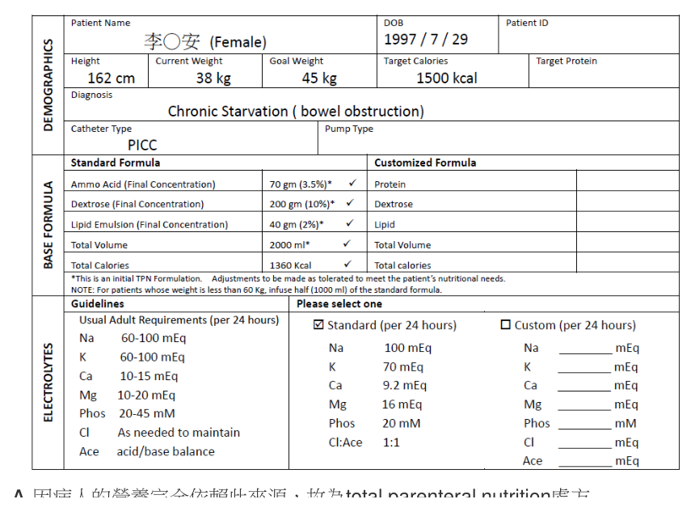

開卷有益 ／
藥師 ／ 調劑學與臨床藥學 ／ 107 年第 2 次107 年第 2 次藥師調劑學與臨床藥學試題與答案
這一頁是民國 107 年第 2 次藥師調劑學與臨床藥學的整份歷屆試題，共 80 題，題目與標準答案出自考選部「國家考試試題及測驗式試題答案」開放資料，其中 78 題附有詳解。以下逐題列出題幹、選項與答案；要計時作答或記錄成績，請用線上練習。
考選部原始場次代碼：107100
線上作答這一科 →
全部 80 題
第 1 題
有關溶液濃度的表示，下列何者錯誤？
（A） 1 ppm相當於0.001%（B） 1：10相當於10%（w/w）（C） 0.1%（w/w）相當於1：1,000（D） 5 g於250 mL相當於2%（w/v）答案：（A）
詳解與考點 正解：本題問濃度表示中錯誤者。1% = 10,000 ppm，因此 1 ppm = 1 / 10,000% = 0.0001%，不是 0.001%，故選 A。
B：1:10 表示 1 g 存在於總量 10 g 中，換算為 1 / 10 × 100% = 10%（w/w），敘述正確。
C：0.1%（w/w）= 0.1 g / 100 g = 1 g / 1,000 g，等同 1:1,000，敘述正確。
D：5 g / 250 mL = 2 g / 100 mL，所以是 2%（w/v），敘述正確。
本題考點：百分濃度（percent concentration）——先辨認 w/w 或 w/v，再把分子換成每 100 g 或每 100 mL；百萬分率（parts per million）——百分率換 ppm 時乘以 10,000，反向換算時除以 10,000。
第 2 題
下列何種塑膠材質適用於油性軟膏製劑的容器？
（A） polypropylene（B） polyethylene（C） polystyrene（D） polyvinyl chloride答案：（C）
詳解與考點 正解：選擇油性軟膏容器時，判準是油性基質與塑膠材質的相容性。polystyrene 對油脂具良好阻隔性，油相不易滲透或萃出材質成分；油性軟膏又屬無水基質，polystyrene 阻水氣性差的弱點在此不構成問題，因此對油性軟膏製劑的相容性較佳，可作為此類製劑容器，故選 C。
A：polypropylene 雖具良好的耐熱與機械性質，但它屬聚烯烴（polyolefin），非極性的碳氫鏈與油脂性質相近，油相及其中的精油等成分容易滲透管壁或被材質吸附，長期貯存會改變軟膏組成，故不是油性軟膏的適用材質。
B：polyethylene 常見於多種藥品包裝，但同屬聚烯烴，對油脂與精油有滲透與吸附傾向，油性基質長期接觸會使成分穿透或被吸收，不能因其常用就推定適合油性軟膏。
D：polyvinyl chloride 須添加可塑劑才具柔軟性，這些可塑劑會被油相萃取而遷移入製劑，容器本身也會變脆；此可塑劑與油性製劑的相容性顧慮，正是不以它盛裝油性軟膏的原因。
本題考點：藥品包裝相容性（container-product compatibility）——選容器時先看藥品基質是否會造成吸附、滲透、溶出或材質劣化；塑膠容器（plastic containers）——同為塑膠仍須依聚合物性質與製劑組成配對，不能以通用性取代相容性判斷。
第 3 題
有關Turbohaler®特性及使用操作之敘述，下列何者正確？
（A） 為含propellant之吸入劑型（B） 使用前須先振搖（C） 將吸入器從口中移除後須閉氣約10秒（D） 使用時須加上spacer以利吸入答案：（C）
詳解與考點 正解：Turbohaler® 是乾粉吸入器，吸入後須將裝置移離口部並閉氣約 10 秒，使藥粉有時間沉積於呼吸道，故選 C。
A：乾粉吸入器不靠 propellant 推出藥物，而是利用吸氣氣流分散並帶入藥粉。
B：振搖是定量噴霧吸入器中懸浮型藥劑常見的操作；Turbohaler® 的乾粉劑型不以振搖作為使用前步驟。
D：spacer 用於改善定量噴霧吸入器的協調與沉積，Turbohaler® 不需加裝 spacer。
本題考點：乾粉吸入器（dry-powder inhaler）——操作靠足夠吸氣流速帶入藥粉，不使用 propellant 或 spacer；吸入技巧（inhaler technique）——吸入後閉氣數秒再緩慢吐氣，可提高下呼吸道藥物沉積。
第 4 題
層流操作台之HEPA過濾器，建議每幾個月須檢測一次？
（A） 1（B） 3（C） 6（D） 12答案：（C）
詳解與考點 正解：層流操作台的 HEPA 過濾器須以定期完整性與功能檢測確認其過濾效能；依美國藥典 USP 797 章對無菌調製一級工程控制設備（層流操作台）的規定，應每 6 個月由合格人員重新認證，檢測內容包含 HEPA 濾器完整性、氣流風速與粒子計數，我國無菌製劑調配相關作業規範亦採半年期，故選 C。
A：每 1 個月檢測一次較密集，並非本題所問的例行 HEPA 檢測週期；規範既以半年為認證間隔，再加密檢測並無實益。
B：每 3 個月檢測一次同樣短於本題的半年度週期，不能取代規定的例行時點；濾器認證應依規範所訂的 6 個月執行。
D：每 12 個月檢測一次間隔過長，無法符合本題所列的半年度檢測要求；間隔拉長會使濾器破損或洩漏無法及時發現，調製環境將長期處於未經確認的狀態。
本題考點：高效率粒子空氣過濾器（high-efficiency particulate air filter, HEPA filter）——無菌調製環境應以定期完整性與功能檢測確認過濾效能；層流操作台（laminar airflow workbench）——例行清潔不等於濾器驗證，設備檢測應依既定週期執行。
第 5 題
Amphotericin B injection靜脈輸注時，須以何種靜脈輸液稀釋？
（A） 5% dextrose in water（B） 0.9% NaCl（C） 2.5% dextrose in 0.45% NaCl（D） Lactated Ringer's injection答案：（A）
詳解與考點 正解：Amphotericin B injection 靜脈輸注時應以 5% dextrose in water 稀釋；含電解質的輸液會造成配伍不相容，因此應選用此無電解質輸液，故選 A。
B：0.9% NaCl 含有 sodium chloride，會使 amphotericin B 發生不相容問題，不能作為此題的稀釋劑。
C：2.5% dextrose in 0.45% NaCl 雖含 dextrose，但同時含有 sodium chloride，仍不符合無電解質稀釋的要求。
D：Lactated Ringer's injection 含有多種電解質，不能用於 amphotericin B injection 的靜脈稀釋。
本題考點：靜脈注射配伍性（intravenous compatibility）——稀釋劑須同時符合藥品安定性與電解質相容性，不能只看是否可靜脈輸注；Amphotericin B（amphotericin B deoxycholate）——調製時選用不含電解質的 dextrose 輸液，以避免不相容。
第 6 題
有關全靜脈營養治療時可能造成的肝臟異常，下列敘述何者錯誤？
（A） 通常會於開始使用後1週內發生（B） 其異常狀況常以脂肪肝或膽汁鬱滯呈現（C） 大多在靜脈營養輸液停止使用後會緩解（D） 給與過多的葡萄糖是可能的原因之一答案：（A）
詳解與考點 正解：本題問全靜脈營養相關肝異常的錯誤敘述。這類異常通常不是開始治療後 1 週內立即出現，而是在持續全靜脈營養一段時間後逐漸表現，因此 A 不正確，故選 A。
B：全靜脈營養相關肝異常可呈脂肪肝或膽汁鬱滯，兩者都是常見的臨床表現。
C：停止全靜脈營養、調整營養處方或恢復腸道餵食後，肝臟異常多可改善，敘述正確。
D：過量葡萄糖會促進脂肪生成並加重肝臟代謝負荷，是可能的促成因素。
本題考點：全靜脈營養相關肝病（parenteral nutrition-associated liver disease）——持續接受全靜脈營養後若出現肝功能異常，須考慮脂肪肝與膽汁鬱滯；營養處方調整（parenteral nutrition management）——避免過度餵食並儘早使用腸道營養，可降低肝臟代謝負荷。
第 7 題
下列何者不可做為dobutamine injection（250 mg/20 mL/vial）之稀釋劑？
（A） 0.9% sodium chloride injection（B） 5% dextrose injection（C） Lactated Ringer's injection（D） 5% sodium bicarbonate injection答案：（D）
詳解與考點 正解：dobutamine injection 的稀釋劑要避免鹼性造成不安定或不相容。5% sodium bicarbonate injection 為鹼性溶液，不能作為其稀釋劑，故選 D。
A：0.9% sodium chloride injection 是 dobutamine 可相容的常用靜脈稀釋液。
B：5% dextrose injection 可用於 dobutamine 靜脈稀釋，符合其配伍需求。
C：Lactated Ringer's injection 可作為 dobutamine 的相容稀釋液，不能因其含電解質就一概排除。
本題考點：注射劑配伍性（injectable compatibility）——選稀釋液時要同時考量 pH、電解質與藥物安定性；鹼性不相容（alkaline incompatibility）——兒茶酚胺類藥物遇明顯鹼性溶液時，應警覺可能的降解或配伍問題。
第 8 題
有關調製化療藥品之注意事項，下列敘述何者正確？
（A） 須穿戴雙層手套，第二層手套應套緊隔離衣袖口（B） 外科口罩可以提供完全的呼吸道防護作用（C） 未經化療藥品沾染之隔離衣，第二天可持續使用（D） 使用超過一日之隔離衣，應丟於一般廢棄物垃圾桶答案：（A）
詳解與考點 正解：調製化療藥品時，雙層手套的外層應覆蓋隔離衣袖口，才能降低手腕交界處暴露的風險；題述第二層手套套緊隔離衣袖口符合此原則，故選 A。
B：外科口罩不能提供完全的呼吸道防護；若作業可能產生氣溶膠，應依風險選擇適當的呼吸防護具。
C：即使未見化療藥品沾染，隔離衣也不應留至次日持續使用，應按單次作業與污染風險處理。
D：使用超過一日的隔離衣不應丟入一般垃圾，應依危害性藥品廢棄物程序處置。
本題考點：危害性藥品防護（hazardous-drug personal protective equipment）——雙層手套與覆蓋袖口可減少皮膚暴露；化療藥品廢棄物（hazardous-drug waste）——防護衣與受污染物須依危害性廢棄物流程處理，不能混入一般垃圾。
第 9 題
有關社區藥局協助廢棄或過期藥品檢收（returned medicine）之敘述，下列何者最適當？
（A） 藥品檢收並非藥局服務範疇，應教育民眾隨廚餘回收即可（B） 廢棄或過期藥品、針頭一定要拿回社區藥局檢收（C） 一般藥品、癌症化療藥品及管制藥品於檢收後可混合處置（D） 得藉由檢收服務進一步瞭解病人之用藥配合度及治療狀況答案：（D）
詳解與考點 正解：社區藥局檢收廢棄或過期藥品時，也可藉由藥品種類、剩餘量與病人說明，進一步評估用藥配合度及治療狀況，因此 D 最適當，故選 D。
A：廢棄藥品不應教育民眾隨廚餘處理；藥局可提供用藥與適當處置的衛教或轉介。
B：不同藥品與針具的檢收管道並不完全相同，不能以「一定」都送回社區藥局概括處理；針頭屬尖銳廢棄物，應置於耐穿刺容器並循醫療廢棄物流程處理，不與一般廢棄藥品一併送交社區藥局。
C：一般藥品、癌症化療藥品與管制藥品有不同的危害性與管理要求，檢收後不可混合處置。
本題考點：退回藥品檢收（returned-medicine collection）——檢收除協助安全處置外，也可作為辨識剩藥與用藥問題的接點；藥品廢棄物分類（pharmaceutical-waste segregation）——管制藥品、危害性藥品與一般藥品須依不同處置流程分流。
第 10 題 待校
下列敘述何者正確？
（A） Bokey® EM為腸溶微粒膠囊（B） Glidiab®為持續藥效錠（C） Phyllocontin®為腸溶錠（D） Takepron® OD為雷射打洞之持續藥效錠答案：（A）
第 11 題
醫療機構進行藥品使用評估（DUE），下列何者不是選擇評估藥品之主要考量因素？
（A） 藥品進用時間長短（B） 高價藥品（C） 高用量藥品（D） 易被不當使用的藥品答案：（A）
詳解與考點 正解：藥品使用評估選題應優先鎖定可能造成高成本、高使用量或不當使用風險的藥品；單純進用時間長短本身不表示有使用品質問題，因此不是主要考量因素，故選 A。
B：高價藥品會帶來顯著資源使用影響，適合納入 DUE 評估其適應症、療效與成本效益。
C：高用量藥品涉及較多病人與較大總暴露量，若有不當使用，改善效益也較大。
D：容易被不當使用的藥品直接關係病人安全與合理用藥，是 DUE 的重要選題條件。
本題考點：藥品使用評估（drug use evaluation, DUE）——選題以安全性、使用量、成本與不當使用風險等可改善性為優先；合理用藥（rational drug use）——評估目的在找出可介入的使用問題，不以藥品在院年資作為主要判準。
第 12 題
下列何者不是消化性潰瘍疾病用藥？
（A） lansoprazole（B） omeprazole（C） pantoprazole（D） aripiprazole答案：（D）
詳解與考點 正解：lansoprazole、omeprazole 與 pantoprazole 都是抑制胃酸分泌的 proton pump inhibitors；aripiprazole 則為非典型抗精神病藥，不是消化性潰瘍疾病用藥，故選 D。
A：lansoprazole 為 proton pump inhibitor，可用於抑制胃酸並治療消化性潰瘍相關疾病。
B：omeprazole 同屬 proton pump inhibitor，是消化性潰瘍與胃酸相關疾病的常用藥物。
C：pantoprazole 也是 proton pump inhibitor，藥名不同但治療目標同為抑制胃酸。
本題考點：質子幫浦抑制劑（proton pump inhibitors, PPIs）——辨認尾碼 -prazole 時，連結到胃酸抑制與潰瘍治療；非典型抗精神病藥（atypical antipsychotics）——aripiprazole 的主要治療領域為精神疾病，不以胃酸抑制為作用目的。
第 13 題
依Institute for Safe Medication Practices（ISMP）對高警訊藥品（high-alert medications）之定義，下列敘 述何者正確？
（A） 所有容易發生用藥疏失（medication errors）的藥品（B） 在正常用藥情形下，副作用相對較多的藥品（C） 當用藥疏失發生時，對病人危害較大的藥品（D） 對老年、孕婦及小兒相對危險性較高的藥品答案：（C）
詳解與考點 正解：高警訊藥品的判準不是比較副作用數目或用藥疏失發生率，而是看一旦發生用藥疏失，是否可能造成病人嚴重傷害。符合此定義的是 C，故選 C。
A：容易發生 medication errors 的藥品未必都屬 high-alert medications；兩者差在高警訊藥品特別強調疏失後果的嚴重性。
B：正常使用時副作用較多是藥物本身的不良反應風險，並非高警訊藥品的定義。
D：特定族群的相對風險較高可影響處方評估，但不能取代「用藥疏失造成重大傷害」這項定義核心。
本題考點：高警訊藥品（high-alert medications）——判斷時看用藥疏失發生後的潛在傷害嚴重度，不看是否最容易出錯；用藥安全（medication safety）——高警訊藥品應以標示、獨立覆核與流程設計降低錯誤造成的後果。
第 14 題
Beers criteria之內容與下列何者有關？
（A） 藥品療效證據之分級標準（B） 老年人潛在不適當用藥（C） 孕婦用藥之危險分級原則（D） 藥品不良反應因果關係之評估項目答案：（B）
詳解與考點 正解：Beers criteria 的適用對象是老年族群，核心用途是辨識治療風險可能大於效益的潛在不適當用藥（potentially inappropriate medications）。因此（B）老年人潛在不適當用藥正是這套準則所處理的問題，故選 B。
A：藥品療效證據的分級是在評讀研究品質與建議強度，並非依病人年齡篩選可能不適當的處方。
C：孕婦用藥危險分級著重母體暴露對胎兒的風險，與老年人因生理功能改變及多重用藥而增加的處方風險不同。
D：不良反應因果關係評估會檢視用藥時序、停藥後變化及再投藥反應等證據，目的是判定特定反應是否由藥品造成，不是列出老年人的應避用藥品。
本題考點：Beers criteria——遇到老年病人的處方審視時，用此準則辨識潛在不適當用藥，不把它當成療效證據或不良反應因果關係工具；老年多重用藥風險（polypharmacy risk）——判斷處方適切性時，須同時看年齡相關藥物敏感性、器官功能與交互作用。
第 15 題
婦女懷孕期間發生慢性高血壓須以降血壓藥品治療時，下列何者為使用禁忌？
（A） enalapril（B） nifedipine（C） methyldopa（D） labetalol答案：（A）
詳解與考點 正解：懷孕期間治療慢性高血壓時，關鍵是避開會干擾胎兒腎臟發育的 renin-angiotensin system 抑制藥。enalapril 為 ACE inhibitor，孕期暴露可能造成胎兒腎功能受損及羊水過少，因此屬使用禁忌，故選 A。
B：nifedipine 為 calcium channel blocker，可作為懷孕期間控制高血壓的用藥選項，並非本題所問的禁忌藥。
C：methyldopa 具有妊娠高血壓治療的長期使用經驗，作用機轉不會造成 ACE inhibitor 的胎兒腎臟風險。
D：labetalol 兼具 α 與 β 阻斷作用，也是妊娠高血壓常用的選項；分辨關鍵在其不是抑制 renin-angiotensin system 的藥品。
本題考點：妊娠高血壓用藥（antihypertensive therapy in pregnancy）——先排除會危害胎兒發育的藥類，再依母體病況選擇可用藥品；ACE inhibitor fetopathy——懷孕期間見到 ACE inhibitor 時，應優先連結胎兒腎功能受損與羊水過少的風險。
第 16 題
林小姐28歲，已持續使用warfarin一段時間。日前她得知懷孕，下列何種處置最適當？
（A） 於懷孕期間須停用任何抗凝血藥品，待分娩後再繼續使用（B） warfarin須降低劑量，可繼續使用（C） 宜改用heparin，以減少抗凝血藥品通過胎盤影響胎兒（D） 可改用aspirin，因具有相同效果且副作用低答案：（C）
詳解與考點 正解：已懷孕且仍須維持抗凝血治療時，判準是藥物能否通過胎盤。warfarin 可通過胎盤並增加胎兒畸形與出血風險；heparin 分子較大，通常不通過胎盤，故改用（C）heparin 較能兼顧母體抗凝血需求與胎兒安全，故選 C。
A：若原有抗凝血適應症仍存在，全面停用抗凝血藥會使母體血栓風險失去控制，不能因懷孕而一律停藥。
B：降低 warfarin 劑量不能消除其通過胎盤的特性，胎兒暴露風險不會因此獲得可靠避免。
D：aspirin 為抗血小板藥，抑制血小板聚集的作用位置與 warfarin 的抗凝血作用不同，不能視為等效替代。
本題考點：妊娠抗凝血（anticoagulation in pregnancy）——需要抗凝血時先判斷藥物是否通過胎盤，能避免胎兒直接暴露者較適合；warfarin embryopathy——孕期遇到 warfarin 要連結其胎盤穿透性與胎兒風險；antiplatelet versus anticoagulant——兩類藥都影響血栓，但作用目標不同，不可直接互換。
第 17 題
有關兒童用藥安全與正確餵藥技巧，下列敘述何者錯誤？
（A） 用小量杯可較精準的量取液體藥品（B） 家用茶匙量取液體藥品誤差較大（C） 絕對不可以把膠囊內的藥品與巧克力布丁混合後一起服用（D） 可以給小禮物、貼紙、勳章等鼓勵孩童配合服藥答案：（C）
詳解與考點 正解：兒童餵藥的原則是在不破壞劑型與不改變完整劑量的前提下，提高服藥可接受性。並非所有膠囊都不能開啟；經藥師確認後，部分非腸溶、非緩釋膠囊可與少量軟質食物混合服用，因此（C）的絕對禁止說法錯誤，故選 C。
A：使用附刻度的小量杯量取液體藥品，比使用沒有標準容量的家用湯匙更能減少量取誤差。
B：家用茶匙的實際容積差異大，不能作為精確量取液體藥品的工具，這正是改用量具的理由。
D：以小禮物、貼紙或勳章給予正向鼓勵，可協助孩童建立配合服藥的行為，與正確餵藥技巧相符。
本題考點：劑型完整性（dosage-form integrity）——要開啟膠囊或與食物混合前，先判斷是否為腸溶或緩釋劑型；兒童用藥量取（pediatric medication measurement）——液體藥應使用有刻度的量具，避免以家用湯匙估量；服藥依從性（medication adherence）——可用正向鼓勵提升配合度，但不以破壞劑型換取方便。
第 18 題
老年人使用下列何種藥品容易出現尿液滯留？
（A） furosemide（B） diphenhydramine（C） acetaminophen（D） captopril答案：（B）
詳解與考點 正解：老年人出現尿液滯留時，應優先辨識具抗膽鹼作用的藥品。diphenhydramine 是第一代 H1 antihistamine，具明顯抗膽鹼效應，會使膀胱逼尿肌收縮受抑並增加排尿困難風險，故選 B。
A：furosemide 為 loop diuretic，主要增加尿液生成；雖可能造成頻尿，作用方向不是尿液滯留。
C：acetaminophen 為止痛退燒藥，沒有 diphenhydramine 所代表的顯著抗膽鹼作用，不能由此推論會造成尿液滯留。
D：captopril 為 ACE inhibitor，常見的用藥考量與血壓、腎功能及咳嗽等相關，並非抗膽鹼性尿液滯留。
本題考點：抗膽鹼副作用（anticholinergic adverse effects）——老年人出現尿滯留、口乾、便祕或視力模糊時，先回查具抗膽鹼活性的藥物；第一代 H1 antihistamine——此類藥的鎮靜與抗膽鹼效應常使其成為老年處方的風險來源。
第 19 題
二位病人因青春痘到門診接受治療，其膚質分別為油性及敏感性肌膚。此二人外用藥品基劑的選擇，下列何 者最適當？
（A） 油性肌膚以cream來治療，敏感性肌膚以gel來治療（B） 油性肌膚以gel來治療，敏感性肌膚以cream來治療（C） 皆建議以cream來治療（D） 皆建議以gel來治療答案：（B）
詳解與考點 正解：青春痘外用基劑的選擇要同時看皮脂量與皮膚耐受性。gel 質地較清爽、油脂感低，較適合油性肌膚；cream 具有較好的潤膚與保護效果，較適合敏感性肌膚，故選 B。
A：將基劑配對完全倒置。cream 較可能增加油性肌膚的黏膩感，而 gel 常含揮發性成分，對敏感性肌膚的刺激性可能較高。
C：兩者都用 cream 忽略油性肌膚對清爽、低油脂基劑的需求，不能同時符合兩種膚質。
D：兩者都用 gel 則忽略敏感性肌膚需要較佳潤膚與屏障支持的特性，分辨關鍵不只在青春痘診斷，也在膚質。
本題考點：外用基劑選擇（topical vehicle selection）——油性皮膚優先選清爽、低油脂感的 gel，敏感性皮膚則考慮較具潤膚性的 cream；皮膚耐受性（skin tolerability）——同一藥物的療效之外，基劑造成的刺激與使用感會影響是否能持續治療。
第 20 題
王太太的醫師為她開立terazosin，其適應症最可能為何？
（A） 攝護腺肥大（B） 心悸（C） 高血壓（D） 頻尿答案：（C）
詳解與考點 正解：terazosin 為選擇性 α1 blocker，可使周邊血管平滑肌鬆弛而降低血壓。題幹對象為王太太，排除了良性攝護腺肥大這項男性器官相關適應症，因此最可能的適應症是（C）高血壓，故選 C。
A：terazosin 的確可改善良性攝護腺肥大造成的尿路症狀，但王太太沒有攝護腺，此適應症不符合題幹的病人線索。
B：心悸的處置主要依心律與病因判斷，terazosin 的主要藥理效果不是直接控制心跳或心律。
D：頻尿是症狀而非 terazosin 在本題所指的主要診斷性適應症；它在攝護腺肥大病人改善排尿症狀，不能據此將頻尿本身當作適應症。
本題考點：α1 blocker——見到 terazosin 時，先連結血管擴張降壓與鬆弛攝護腺平滑肌兩項效果；適應症與症狀（indication versus symptom）——藥物可能改善某症狀，不表示該症狀本身就是其適應症，須配合病人身分與病因判讀。
第 21 題
藥師接到co-trimoxazole之處方，需要病人的一些資訊才能正確調劑。下列敘述何者錯誤？
（A） 需要病人腎功能，因為須依照腎功能調整劑量（B） 需要病人肝功能，因為須依照肝功能調整劑量（C） 需要co-trimoxazole單位含量，因為有不同含量之製劑（D） 需要病人過敏史及藥物不良反應史，因為此藥過敏反應可能很嚴重答案：（B）
詳解與考點 正解：co-trimoxazole 的劑量調整重點在腎功能，因其成分的排除與腎臟功能密切相關。肝功能異常雖可能影響用藥安全評估，但一般不是此藥常規依肝功能調整劑量的依據，因此（B）的因果敘述錯誤，故選 B。
A：取得腎功能可評估藥物排除能力，並據此決定是否需要調整劑量或給藥間隔，這是正確調劑的重要資訊。
C：co-trimoxazole 有不同單位含量的製劑，必須確認處方所指的含量，才能避免總劑量換算錯誤。
D：此藥可能引起嚴重過敏反應，病人的過敏史與既往藥物不良反應史會直接影響處方是否適用，應在調劑前確認。
本題考點：腎功能劑量調整（renal dose adjustment）——對以腎臟排除為主的藥物，先取得腎功能再核對劑量與給藥間隔；調劑資訊蒐集（dispensing information gathering）——確認製劑含量、過敏史與重要器官功能，才能把處方換成正確且安全的藥品交付。
第 22 題
下列何者屬於三級藥品資訊來源（tertiary drug information sources）？
（A） Medline（B） The Lancet（C） Iowa Drug Information Service（D） British National Formulary答案：（D）
詳解與考點 正解：三級藥品資訊來源是將既有原始研究與文獻整理成可供臨床快速查閱的參考資料。British National Formulary 屬於彙整藥品資訊的參考書型資源，因此（D）為三級藥品資訊來源，故選 D。
A：Medline 主要提供文獻索引與檢索，功能是協助找到研究與文獻，屬二級資訊來源而非整理後的直接參考資料。
B：The Lancet 刊載原始研究與其他學術文章，閱讀其研究報告時是在接觸一級資訊來源。
C：Iowa Drug Information Service 的功能在索引與彙集藥品文獻，重點是導向原始資料，分類上屬二級資訊來源。
本題考點：藥品資訊來源分級（drug information source hierarchy）——原始研究是第一級，索引與摘要系統是第二級，彙整成教科書或處方集的資源是第三級；臨床查詢策略（clinical information retrieval）——需要快速確認一般藥品資訊時先找三級來源，需要追溯研究證據時再經二級來源找一級文獻。
第 23 題
詳詢病人用藥史是藥事服務的重要環節，有關獲取病人用藥史的方法或技巧，下列敘述何者錯誤？
（A） 訪視病人前應先檢閱病歷及其相關資料（B） 不建議使用開放式（open-ended）問題（C） 詢問內容應包括處方藥、指示藥、成藥、中草藥及保健食品等使用情形（D） 與病人互動時不應採用評斷性語句答案：（B）
詳解與考點 正解：完整用藥史訪談需要讓病人有機會說出未預期的用藥與使用方式，因此應鼓勵開放式（open-ended）問題。以「不建議使用」描述這種提問方式，會限制資訊蒐集，故（B）錯誤，故選 B。
A：訪視前先檢閱病歷與相關資料，可先掌握診斷、既往處方與需釐清的問題，使訪談更有效率。
C：處方藥以外的指示藥、成藥、中草藥與保健食品都可能造成重複用藥或交互作用，完整用藥史應一併詢問。
D：非評斷性的互動方式能降低病人因擔心被責備而隱瞞用藥的情形，有助於取得較可靠的資訊。
本題考點：用藥史訪談（medication history interview）——先用開放式問題取得全貌，再以具體問題核對品項、劑量與使用方式；非處方產品盤點（nonprescription product reconciliation）——只問處方藥會漏掉成藥、中草藥與保健食品造成的風險；非評斷式溝通（nonjudgmental communication）——要提高資訊完整性時，採中性語句比責備式問法有效。
第 24 題
Valproic acid的理想血中濃度範圍一般為若干mg/L？
（A） 5～25（B） 25～50（C） 50～100（D） 150～300答案：（C）
詳解與考點 正解：valproic acid 的一般治療藥物監測範圍，以總血中濃度 50-100 mg/L 為常用判準。因此（C）50-100 mg/L 符合題目所問的理想範圍，故選 C。
A：5-25 mg/L 低於一般治療範圍，不能作為 valproic acid 常用的血中濃度目標。
B：25-50 mg/L 仍位於常用範圍下限以下或邊緣，未達題目所指的一般理想範圍。
D：150-300 mg/L 明顯高於常用監測範圍，應優先考慮濃度過高及毒性風險，而非視為理想值。
本題考點：治療藥物監測（therapeutic drug monitoring）——對 valproic acid 等需監測藥物，先確認抽血時點與總濃度是否落在常用目標範圍；治療窗（therapeutic range）——判讀濃度時要同時看療效與毒性，低於範圍不等於安全且有效，高於範圍也不等於療效較佳。
第 25 題
下列何者不以血中濃度做為監測療效之主要指標？
（A） phenytoin（B） theophylline（C） warfarin（D） valproic acid答案：（C）
詳解與考點 正解：warfarin 的療效主要反映在凝血功能，而非藥物本身的血中濃度。臨床以 PT/INR 監測其抗凝血效果，故（C）warfarin 不以血中濃度作為療效監測的主要指標，故選 C。
A：phenytoin 的藥物動力學具非線性特性，血中濃度與療效及毒性密切相關，常需作治療藥物監測。
B：theophylline 的治療窗較窄，血中濃度對確認療效與避免毒性具有重要價值。
D：valproic acid 的濃度常用於治療藥物監測，尤其在療效不足、疑似毒性或用藥變動時可協助判讀。
本題考點：藥效監測（pharmacodynamic monitoring）——藥物作用可由直接生理指標量測時，優先看該指標，例如 warfarin 看 PT/INR；治療藥物監測（therapeutic drug monitoring）——治療窗窄、濃度與效果關聯高或藥物動力學變異大時，血中濃度較有判讀價值。
第 26 題
Doxycycline與aluminum hydroxide併用時，產生交互作用之機制為何？
（A） 改變腸胃道的pH值，減少doxycycline之吸收（B） 增加doxycycline的代謝（C） 二者競爭作用接受器（D） 形成複合物（complex），減少doxycycline之吸收答案：（D）
詳解與考點 正解：doxycycline 的四環素結構可與含鋁的多價陽離子結合。與 aluminum hydroxide 同服時會在腸胃道形成不易吸收的複合物（complex），使 doxycycline 可吸收的游離藥量下降，故選 D。
A：制酸劑改變胃腸道 pH 可影響某些藥物吸收，但 doxycycline 與 aluminum hydroxide 的主要交互作用是螯合形成複合物，不是單純 pH 改變。
B：此交互作用在藥物尚未充分吸收前即發生，並非 aluminum hydroxide 增加 doxycycline 的代謝所致。
C：兩藥不需要競爭同一接受器即可發生交互作用；分辨關鍵在腸道內的物理化學結合，而非藥效學拮抗。
本題考點：螯合交互作用（chelation interaction）——四環素類遇到鋁、鎂、鈣或鐵等多價離子時，先想到可能形成難吸收複合物；吸收期交互作用（absorption interaction）——交互作用若在腸胃道發生，通常以錯開服用時間或避免併用來降低風險。
第 27 題
王小姐長期服用phenytoin治療癲癇，若併用含有norgestrel和ethinyl estradiol的口服避孕藥，會導致下列何 種現象？
（A） phenytoin會增加口服避孕藥之代謝，降低避孕效果（B） phenytoin會降低口服避孕藥之代謝，口服避孕藥副作用增加（C） 口服避孕藥造成phenytoin血中濃度增加，phenytoin毒性增加（D） 兩者互相影響，血中濃度均會增加答案：（A）
詳解與考點 正解：phenytoin 是肝臟代謝酵素誘導劑，會加速含 norgestrel 與 ethinyl estradiol 口服避孕藥的代謝。荷爾蒙暴露量下降會削弱避孕效果，因此（A）正確，故選 A。
B：phenytoin 對口服避孕藥的主要影響是增加而非降低其代謝，敘述的方向剛好相反。
C：本組合的關鍵是 phenytoin 誘導酵素後降低避孕藥濃度，不能將交互作用反推為口服避孕藥必然提高 phenytoin 濃度。
D：酵素誘導會使受影響藥物的代謝加快，不會使兩者血中濃度都增加；看似是雙向交互作用，實際上要先辨識誰是誘導劑及誰是受影響的受質。
本題考點：酵素誘導（enzyme induction）——長期使用的誘導劑會加速受質藥物代謝，使其血中濃度與療效下降；口服避孕藥交互作用（oral contraceptive interaction）——合併酵素誘導抗癲癇藥時，須先警覺避孕效果可能降低，而不是只監測抗癲癇藥濃度。
第 28 題
下列何者與digoxin併用時，會導致digoxin的生體可用率增加？
（A） cholestyramine（B） cyclosporine（C） metoclopramide（D） neomycin答案：（B）
詳解與考點 正解：digoxin 在腸道的外排會受 P-glycoprotein 影響。cyclosporine 可抑制此轉運蛋白，使 digoxin 的腸道外排減少、進入體循環的比例增加，因此（B）會增加 digoxin 的生體可用率，故選 B。
A：cholestyramine 可在腸道結合多種藥物，會減少而非增加 digoxin 的可吸收量。
C：metoclopramide 會加快腸胃道蠕動與排空，可能縮短 digoxin 的吸收時間，方向不是提高其生體可用率。
D：neomycin 對 digoxin 的腸道吸收具有降低作用，不能作為增加生體可用率的組合。
本題考點：P-glycoprotein——判斷腸道吸收交互作用時，轉運蛋白受抑可使受質藥物的外排減少與暴露量上升；digoxin drug interaction——digoxin 的治療窗窄，遇到可能改變吸收或轉運的併用藥時，須警覺血中濃度與毒性風險改變。
第 29 題
下列乳化劑，何者最不適合用於製備內服之乳劑？
（A） methylcellulose（B） triethanolamine oleate（C） acacia（D） polyoxyethylene sorbitan monooleate答案：（B）
詳解與考點 正解：內服乳劑的乳化劑除了要能穩定乳化，還必須兼顧口服安全性與可接受性。triethanolamine oleate 為常用於外用製劑的皂類乳化劑，不適合用於內服乳劑，故選 B。
A：methylcellulose 可增加水相黏度並協助乳劑穩定，適合用於內服液體製劑的配方考量。
C：acacia 是傳統內服乳劑常用的天然乳化劑，與題目所問的最不適合者相反。
D：polyoxyethylene sorbitan monooleate 為非離子界面活性劑，可用於口服製劑；它即 polysorbate 80，刺激性與毒性低且已收載於口服製劑，triethanolamine oleate 則是油酸與三乙醇胺現場皂化而成的皂類乳化劑，口服刺激性使其僅適用於外用。
本題考點：口服乳劑（oral emulsion）——選乳化劑時同時核對乳化能力、毒性、刺激性與口服可接受性；乳化劑用途（emulsifier application）——同為乳化劑不代表可互換，外用皂類乳化劑不能直接移植到內服配方。
第 30 題
下列製劑何者建議每72小時更換一次？
（A） nicotine patch（B） fentanyl patch（C） diclofenac patch（D） nitroglycerin patch答案：（B）
詳解與考點 正解：經皮貼片要依藥物設計的釋放時間更換。fentanyl patch 的標準更換間隔為每 72 小時一次，故選 B。
A：nicotine patch 的設計是提供每日戒菸治療的尼古丁暴露，不屬於每 72 小時更換的貼片。
C：diclofenac patch 的局部止痛貼片更換週期不是本題所問的 72 小時，依製劑不同多為每 12 或 24 小時更換一次，不能因同為貼片而套用 fentanyl 的時程。
D：nitroglycerin patch 須考量硝酸鹽耐受性與無藥期安排，使用節律與連續 72 小時的 fentanyl patch 不同。
本題考點：經皮治療系統（transdermal therapeutic system）——貼片更換頻率取決於個別製劑的釋放設計，不能以劑型相同推定時程相同；fentanyl patch——辨識此藥的貼片時，應連結其每 72 小時更換的標準使用節律。
第 31 題
Phenytoin injection（50 mg/mL）中，常添加下列何者做為助溶劑？
（A） glycerin（B） propylene glycol（C） propyl alcohol（D） PEG 400答案：（B）
詳解與考點 正解：phenytoin 的水中溶解度低，注射劑需以共溶劑維持足夠濃度。Phenytoin injection 50 mg/mL 以約 40% propylene glycol 併約 10% 乙醇為共溶劑，並將 pH 調至強鹼性以維持藥物溶解，因此（B）正確；快速靜脈推注時的低血壓與心律不整，也與 propylene glycol 有關，故選 B。
A：glycerin 雖可作為某些製劑的溶媒或保濕劑，但黏度高、助溶能力不及 propylene glycol，不是 phenytoin injection 的標準助溶劑。
C：propyl alcohol 並非本製劑所用以克服 phenytoin 難溶性的助溶劑，名稱相近不能與 propylene glycol 混同；propyl alcohol 為單元醇，注射劑的共溶劑不採用此成分。
D：PEG 400 也是製劑上可見的共溶劑，但不是本題 phenytoin injection 的典型配方成分；本品所用的共溶劑為 propylene glycol 併乙醇。
本題考點：共溶劑（cosolvent）——水中難溶的注射藥物需以適當共溶劑提高溶解度，先從藥物本身的溶解性判斷配方需求；phenytoin injection——見到此注射劑時，應連結 propylene glycol 助溶與給藥時的製劑安全考量。
第 32 題
根據我國「藥品優良調劑作業準則」藥事人員應於藥品容器包裝上載明事項，下列何者錯誤？
（A） 病患之姓名及性別（B） 醫療機構或藥局之名稱及地址（C） 處方醫師姓名（D） 調劑者姓名答案：（C）
詳解與考點 正解：依藥品優良調劑作業準則，藥事人員調劑後應於藥品容器包裝上載明：病患姓名及性別、藥品名稱、單位含量及數量、用法及用量、調劑地點之名稱、地址及電話、調劑者姓名、調劑或交付年月日；這些欄位使病人能辨識藥品來源並可追溯調劑責任，處方醫師姓名則不在必載事項之列。因此（C）錯誤，故選 C。
A：病患姓名及性別可協助確認藥品交付對象，避免同名或相近姓名造成拿錯藥。
B：醫療機構或藥局的名稱及地址可辨識藥品交付來源，也使後續聯絡與追溯有所依據。
D：調劑者姓名可連結調劑責任與後續諮詢需求，屬藥品容器標示應載明的資訊。
本題考點：藥品容器標示（dispensing label）——解題時逐項比對病人辨識、來源與調劑追溯所需資訊，不把所有處方資訊都視為必載項目；藥品優良調劑作業準則——法規題要先定位適用準則與規範時點，避免把其他醫療文書的記載要求混入容器標示。
第 33 題
下列何項材質較軟、延展性較高，最常被用於製成塑膠擠瓶（squeeze bottle）？
（A） low-density polyethylene（LDPE）（B） polyvinyl chloride（PVC）（C） polypropylene（PP）（D） polystyrene（PS）答案：（A）
詳解與考點 正解：塑膠擠瓶需要瓶身在按壓後容易變形、放手後可回復，材料必須較軟且具有良好延展性。low-density polyethylene（LDPE）符合這些物性，因此最常用於製成 squeeze bottle，故選 A。
B：polyvinyl chloride（PVC）的性質受配方影響很大，但一般不是藥品塑膠擠瓶最典型的低密度、易擠壓材料。
C：polypropylene（PP）耐熱性與剛性較佳，瓶身通常比 LDPE 硬，按壓便利性不是其主要優勢。
D：polystyrene（PS）較硬且脆，不適合反覆擠壓回彈的容器需求。
本題考點：塑膠容器材質（pharmaceutical plastic containers）——需要反覆擠壓的容器時，優先找柔軟、延展性高的 LDPE；材料物性與劑型（material properties and dosage form）——選容器要把剛性、韌性與使用方式一起判斷，不能只依是否為塑膠分類。
第 34 題
有關藥品儲存與管理之敘述，下列何者錯誤？
（A） 藥局溫度一般應控制在16～25℃間，且陽光不可直射於藥品包裝上（B） 效期較長的新批號藥品，應放置於舊批號藥品的前面（靠近儲架外面），以方便效期管理（C） 可利用電腦自動化系統，協助庫存與效期管理（D） 藥品冰箱應有高低溫度計功能，以便進行溫度紀錄答案：（B）
詳解與考點 正解：藥品效期管理採先到期先出（FEFO）的原則，效期較短的舊批號應擺在較靠外、優先調劑的位置；效期較長的新批號放在後方，才不會讓舊品先被遺忘而過期。（B）把新批號放到舊批號前面，排序方向相反，故選 B。
A：藥局的室溫藥品須避免不適當高溫與日照，控制環境溫度並避免陽光直射包裝，是維持藥品品質的基本作法。
C：電腦化系統可記錄庫存量、批號與有效期限，能協助找出近效期品並降低人工盤點遺漏。
D：冷藏藥品的儲存品質取決於實際溫度是否持續合格，具高低溫紀錄功能的溫度計可協助辨認超出範圍的情形。
本題考點：先到期先出（first-expired, first-out, FEFO）——排架時以效期先後而非進貨新舊決定優先位置；藥品儲存管理（medication storage management）——溫度、光照、批號與效期都要可追溯，才能及早隔離品質風險。
第 35 題
醫師處方carbamazepine 80 mg/day qid給2歲的王小弟，藥師依指示添加乳糖稀釋成每包總重200 mg之粉劑 共8包，若以幾何稀釋法（geometric dilution）製備，應經過幾次稀釋才完成？
（A） 4（B） 3（C） 5（D） 6答案：（A）
詳解與考點 正解：每包含 carbamazepine 80 mg/day / 4 doses/day = 20 mg/dose，總重為 200 mg/dose，故每包需乳糖 200 mg/dose - 20 mg/dose = 180 mg/dose。共 8 包時，原藥總量為 20 mg/dose × 8 doses = 160 mg，成品總量為 200 mg/dose × 8 doses = 1,600 mg。以幾何稀釋法依序加入等量或相近量乳糖：160 mg 加 160 mg 成 320 mg，為第 1 次；再加 320 mg 成 640 mg，為第 2 次；再加 640 mg 成 1,280 mg，為第 3 次；最後加餘下 320 mg 至 1,600 mg，為第 4 次，故選 A。
B：3 次稀釋後僅達 1,280 mg，尚有 320 mg 乳糖未均勻混入，未完成本批 8 包的總量。
C：5 次稀釋會把已可在第 4 次完成的加料再不必要地拆分，與本題的幾何稀釋步驟不符。
D：6 次稀釋同樣超出完成 1,600 mg 成品所需的步數；判斷關鍵是每次都以前一混合物的量作為下一次加入量的基準。
本題考點：幾何稀釋法（geometric dilution）——少量有效成分與大量稀釋劑混合時，先以等量稀釋劑逐步倍增，才能提升混合均勻性；單位劑量粉劑計算（powder dilution calculation）——先由每日劑量除以給藥次數求每包藥量，再回推整批有效成分與賦形劑總量。
第 36 題
如欲製備0.8%（w/w）hydrocortisone cream 60公克，須取1% hydrocortisone cream多少公克與0.5%的 hydrocortisone cream混合？
（A） 12（B） 24（C） 36（D） 48答案：（C）
詳解與考點 正解：此題以濃度守恆求 1% hydrocortisone cream 的用量。令 x 為 1% cream 的公克數，則 0.01 × x + 0.005 × (60 g - x) = 0.008 × 60 g；整理得 0.005x = 0.18 g，x = 36 g。因此取 1% cream 36 g，再加 0.5% cream 24 g，總量 60 g 時的有效成分為 0.36 g + 0.12 g = 0.48 g，即 0.48 g / 60 g = 0.8%，故選 C。
A：1% cream 若只取 12 g，與其餘 48 g 的 0.5% cream 混合後，有效成分濃度低於 0.8%。
B：24 g 是較低濃度的 0.5% cream 應取的量，不是 1% cream 的量；兩種 cream 的份量不可對調。
D：1% cream 取 48 g、0.5% cream 取 12 g 時，成品濃度為 0.9%，高於目標濃度。
本題考點：濃度守恆（concentration balance）——混合兩種濃度的製劑時，以各成分量總和等於目標成分量列式；配製與稀釋（compounding and dilution）——目標濃度越接近較高濃度製劑，較高濃度製劑的用量就越多。
第 37 題
Magnesium sulfate 10% injection 20 mL，含有多少mEq 的鎂離子？（MgSO4．7H2O MW = 246）
（A） 4.1（B） 8.2（C） 16.3（D） 32.6答案：（C）
詳解與考點 正解：10% magnesium sulfate injection 表示每 100 mL 含 10 g，故 20 mL 含 10 g / 100 mL × 20 mL = 2 g MgSO4·7H2O。先換算莫耳數：2 g / 246 g/mol = 0.00813 mol = 8.13 mmol。鎂離子為 Mg2+，每 1 mmol 提供 2 mEq，故 8.13 mmol × 2 mEq/mmol = 16.26 mEq，約為 16.3 mEq，故選 C。
A：4.1 mEq 未依題示的 20 mL 劑量與 Mg2+ 的二價電荷完整換算，和 2 g 製劑所提供的當量不符。
B：8.2 接近計算出的 8.13 mmol，卻把 mmol 直接當成 mEq，漏掉 Mg2+ 的二價電荷。
D：32.6 mEq 是正確結果的兩倍，等同把二價電荷或製劑量重複計入。
本題考點：當量換算（milliequivalent conversion）——先由重量換成 mmol，再乘離子價數取得 mEq；注射液濃度（injection concentration）——百分濃度須先轉成每個實際投與體積所含的重量，不能直接把百分數當成劑量。
第 38 題
下列何種注射方式可容許之容積最小？
（A） 皮下（subcutaneous）（B） 皮內（intradermal）（C） 肌肉（intramuscular）（D） 靜脈（intravenous）答案：（B）
詳解與考點 正解：皮內注射是把藥液置於真皮層內，組織可容納的體積最小，且須避免藥液擴散過深；因此在四種給藥途徑中，（B）皮內（intradermal）可容許的注射容積最小，故選 B。
A：皮下（subcutaneous）組織的容積與吸收面積都大於真皮層，可施打的體積通常大於皮內注射。
C：肌肉（intramuscular）注射進入肌肉組織，可容許的注射容積大於皮內與皮下注射。
D：靜脈（intravenous）輸注可在適當速率與監測下給予較大體積，不是本題所問的最小容積途徑。
本題考點：注射途徑與容積（parenteral route and volume）——判斷容積上限時看注入組織的解剖空間與耐受度；皮內注射（intradermal injection）——給藥層次最淺、可容納體積最小，常用於需要局部反應判讀的情境。
第 39 題
2%（w/v）glucose injection 200 mL，要調製成等張溶液，須加入多少公克的NaCl？（1% glucose的冰點下 降值為0.1℃，1% NaCl的冰點下降值為0.576℃）
（A） 1.11（B） 1.904（C） 0.555（D） 0.952答案：（A）
詳解與考點 正解：等張溶液的冰點下降值取 0.52°C。現有 2% glucose 的冰點下降為 2 × 0.1°C = 0.20°C，尚需 0.52°C - 0.20°C = 0.32°C。所需 NaCl 濃度為 0.32°C / 0.576°C = 0.5556%（w/v）；換成 200 mL 的重量為 0.5556 g / 100 mL × 200 mL = 1.111 g，約 1.11 g，故選 A。
B：1.904 g 加入 200 mL 時的 NaCl 貢獻超過補足 0.32°C 所需的量，成品冰點下降會超過等張目標。
C：0.555 是所需 NaCl 的百分濃度，不能直接當成 200 mL 製劑要加入的公克數；0.555 g 加入 200 mL 的濃度不足。
D：0.952 g 換算為 200 mL 中的 NaCl 濃度後，冰點下降仍未補足至 0.52°C。
本題考點：冰點下降法（freezing-point depression method）——先扣除原有成分造成的冰點下降，再以剩餘值反推調整劑濃度；等張調製（isotonicity adjustment）——百分濃度與實際加入重量必須依最終體積換算，不能混用。
第 40 題
下列何種藥品於輸注時可以使用polyvinyl chloride（PVC）容器？
（A） nitroglycerin（B） clindamycin phosphate（C） fat emulsion（D） paclitaxel答案：（B）
詳解與考點 正解：輸液容器的選擇要同時避開藥物吸附與塑化劑溶出。（B）clindamycin phosphate 可使用 polyvinyl chloride（PVC）容器；其在此材質的相容性不涉及題目其他藥物的主要限制，故選 B。
A：nitroglycerin 會被 PVC 材質吸附，造成實際輸注劑量下降，應選用較適當的非 PVC 系統。
C：fat emulsion 含脂質，可能促使 PVC 中的 DEHP 溶出，故通常避免以 PVC 容器盛裝。
D：paclitaxel 製劑與 PVC 接觸有塑化劑溶出風險，輸注時須使用非 PVC 的相容容器與管路。
本題考點：輸液相容性（infusion compatibility）——選容器與管路前，要分別檢查藥物被材質吸附及材質成分被藥液萃取兩種風險；PVC 與 DEHP（polyvinyl chloride and diethylhexyl phthalate）——含脂質或特定溶媒的輸液較可能帶出塑化劑，不能只看藥物是否能溶於輸液。
第 41 題
有關病人自控式止痛劑（PCA），下列敘述何者正確？
（A） 減少藥品濃度過高造成副作用（B） 有很大的機率會造成藥品成癮（C） 適用於預期需要注射藥品不超過24小時的術後病人（D） 小兒或老人可由照護者協助按壓答案：（A）
詳解與考點 正解：病人自控式止痛（patient-controlled analgesia, PCA）由病人按壓取得預先設定的小劑量，並以鎖定時間限制追加；相較於間歇性大劑量注射，能減少血中濃度峰值過高造成的不良反應風險，因此（A）正確，故選 A。
B：PCA 的目的在依疼痛需求提供可控劑量並監測安全性，不代表會以很大的機率造成藥物成癮。
C：PCA 是否適用取決於疼痛需求、病人操作能力與監測條件，並非只能用於預期注射不超過 24 h 的術後病人；常見的適用條件反而是預期需要非口服止痛藥超過 24 h，預期用藥不到 24 h 者通常不必架設 PCA，本選項把條件寫反。
D：按壓者應是能理解並回應自身疼痛的病人；由照護者代按的 PCA by proxy 可能在病人未能表達鎮靜時追加藥量，增加呼吸抑制風險。
本題考點：病人自控式止痛（patient-controlled analgesia, PCA）——判斷安全性時看小劑量、鎖定時間與病人自行觸發三項設計；鴉片類止痛劑峰濃度（opioid peak concentration）——降低不必要的濃度尖峰可減少部分劑量相關不良反應，但不能取代呼吸與鎮靜監測。
第 42 題
王先生對morphine HCl過敏，因胃癌轉移到食道及心臟周圍，最近接受irinotecan、cetuximab治療，目前使 用TPN。近日病人疼痛指數達7分（pain scale: 0～10），下列何者為最適合的止痛法？
（A） codeine phosphate 60 mg q4h（B） codeine phosphate 30 mg q4h＋acetaminophen 500 mg q4h＋paroxetine 12.5 mg CR tab qd（C） morphine sulfate 30 mg FC tab qd（D） hydromorphone PCA答案：（D）
詳解與考點 正解：疼痛指數 7 分屬重度癌症疼痛，須考慮強效鴉片類止痛；食道轉移及使用 TPN 也使非口服給藥較合適。題目已指出對 morphine HCl 過敏，改成另一種 morphine 鹽類不能排除此問題；題幹未交代過敏反應型態，實務上仍須先釐清過敏史並密切監測。在選項中，（D）hydromorphone PCA 能以非口服途徑提供強效止痛並依疼痛追加，故選 D。
A：codeine phosphate 屬較弱的鴉片類止痛劑，單用於重度癌症疼痛通常不足以達到適當止痛。
B：此組合仍以 codeine 為主要鴉片類止痛成分，且（B）中的 paroxetine 會抑制 CYP2D6，可能降低 codeine 轉化為具止痛作用代謝物的能力，與重度疼痛需求不相稱。
C：morphine sulfate 與 morphine HCl 的有效藥物都是 morphine，僅更換鹽類無法處理已知對 morphine 的過敏問題。
本題考點：癌症疼痛階梯（cancer pain analgesic ladder）——重度疼痛優先評估強效鴉片類止痛與合適給藥途徑，而非只加大弱效藥物；鴉片類過敏評估（opioid allergy assessment）——分辨真正過敏、非免疫性反應與鹽類差異後，再選擇替代藥物與監測方式；病人自控式止痛（patient-controlled analgesia）——需由能自述疼痛的病人操作，並配合鎖定時間與安全監測。
第 43 題
輸注TNA（total nutrient admixture）前，須先經過那一種孔徑大小（µm）的濾器？
（A） 0.22（B） 0.45（C） 1.2（D） 5答案：（C）
詳解與考點 正解：TNA（total nutrient admixture）含有 fat emulsion，濾器既要攔截不相容產生的較大微粒，又不能阻礙脂肪乳粒通過；因此應使用 1.2 µm 濾器，（C）正確，故選 C。
A：0.22 µm 濾器的孔徑適用於不含脂肪乳的全靜脈營養輸液，但會阻礙 TNA 中脂肪乳粒的正常通過。
B：0.45 µm 的孔徑同樣過小，不適合作為含脂肪乳 TNA 的標準輸注濾器。
D：5 µm 孔徑過大，無法提供 TNA 輸注所需的微粒過濾保護。
本題考點：全營養混合液過濾（total nutrient admixture filtration）——含脂肪乳的 TNA 選 1.2 µm，與不含脂肪乳輸液的濾器規格不可混用；脂肪乳粒徑（lipid emulsion particle size）——濾器孔徑必須在可通過正常乳粒與攔截異常微粒之間取得平衡。
第 44 題
全靜脈營養輸液中，那些較適合做為熱量的來源？①fat emulsion ②fructose ③xylitol ④dextrose
（A） ①②（B） ①④（C） ②③（D） ③④答案：（B）
詳解與考點 正解：標準全靜脈營養輸液的主要熱量來源是（①）fat emulsion 與（④）dextrose。脂肪乳提供高熱量的脂質，dextrose 提供醣類熱量；兩者合用可兼顧熱量供應與營養調配，故選 B。
A：①fat emulsion 是合適的熱量來源，但②fructose 並非標準 TPN 中慣用的主要熱量來源，不能取代 dextrose。
C：②fructose 與③xylitol 都不是標準 TPN 的主要熱量組合，且此組合漏掉最基本的 fat emulsion 與 dextrose。
D：③xylitol 不能取代標準 TPN 中的主要脂質與醣類熱量來源；本組合同時缺少①與④。
本題考點：全靜脈營養熱量來源（total parenteral nutrition energy sources）——常規配方以 dextrose 提供醣類熱量、以 fat emulsion 提供脂質熱量；營養配方選擇（parenteral nutrition formulation）——判斷熱量來源時先辨認標準常用基質，再排除代謝限制較多的非例行醣類。
第 45 題
有關全靜脈營養輸液（TPN）之調製及貯存，下列敘述何者錯誤？
（A） 當fat與dextrose、amino acid混合後，可增加fat之安定性（B） Three-in-one TPN中fat emulsion可能掩蓋calcium phosphate沉澱物（C） TPN之容器不可使用PVC材質，以免DEHP溶出產生毒性（D） 製備完成之TPN應貯於4°C 冰箱；取出後，須待回到室溫時再使用答案：（A）
詳解與考點 正解：fat emulsion 與 dextrose、amino acid 共混後，配方的 pH、電解質與各成分比例都可能影響乳化系統，必須評估破乳與相容性；dextrose 溶液呈酸性，會中和脂肪乳粒表面的負電荷而促使乳粒聚集，amino acid 則有緩衝的保護作用，故三合一混合後脂肪乳的安定性是下降而非提高。（A）的敘述把風險方向說反，故選 A。
B：Three-in-one TPN 的外觀因 fat emulsion 而混濁，calcium phosphate 沉澱可能被遮蔽，所以配方相容性必須在調製前審核。
C：PVC 的 DEHP 可溶出至輸液，尤其脂質相關配方更需留意，因此 TPN 容器宜避免使用 PVC 材質。
D：TPN 製備完成後須冷藏保存；使用前回復至適合輸注的溫度，是兼顧安定性與病人輸注耐受性的作法。
本題考點：三合一全靜脈營養（three-in-one total parenteral nutrition）——把脂肪乳加入後不能只看外觀，須先審核 pH、電解質與 calcium phosphate 相容性；脂肪乳安定性（lipid emulsion stability）——乳化液的安定性受配方條件影響，混合成分本身不是安定性的保證；TPN 容器材質（TPN container material）——選袋材時要評估 DEHP 溶出與輸液成分的交互作用。
第 46 題
下列何者通常需要一天多次給藥？
（A） cyproheptadine 4 mg tab（B） fexofenadine 180 mg tab（C） loratadine 10 mg tab（D） cetirizine 5 mg tab答案：（A）
詳解與考點 正解：cyproheptadine 屬第一代抗組織胺，作用時間較短，常需分次給藥；因此（A）cyproheptadine 4 mg tab 通常需要一天多次服用，故選 A。
B：fexofenadine 180 mg tab 是較長效的第二代抗組織胺，通常採每日一次給藥。
C：loratadine 10 mg tab 的標準使用方式通常為每日一次，與 cyproheptadine 的分次給藥特性不同。
D：cetirizine 5 mg tab 雖劑量可依年齡調整，常見給藥頻率仍為每日一次，不是本題所問的通常多次給藥藥品。
本題考點：第一代抗組織胺（first-generation antihistamine）——作用較短且常伴隨中樞副作用，給藥頻率通常高於長效第二代藥物；第二代抗組織胺（second-generation antihistamine）——判斷頻率時先看是否為長效周邊 H1 受體拮抗劑，常見方案多為每日一次。
第 47 題
下列何者不屬於醫院藥事委員會的工作執掌？
（A） 審查藥品受試者同意書（B） 編輯處方集（C） 決定醫院用藥品項（D） 訂定院內藥品使用政策答案：（A）
詳解與考點 正解：醫院藥事委員會的核心是院內用藥評估、處方集與政策管理；受試者同意書的倫理審查屬人體試驗審查委員會（IRB）的職責，不是藥事委員會的工作執掌，因此（A）不屬於其工作，故選 A。
B：編輯處方集是藥事委員會整合院內可用藥品、適應症與使用原則的重要工作。
C：決定醫院用藥品項涉及療效、安全性、經濟性與院內需求評估，屬藥事委員會的用藥管理職責。
D：院內藥品使用政策須以一致的審核機制落實，藥事委員會可訂定或審議相關政策。
本題考點：藥事委員會（pharmacy and therapeutics committee）——負責處方集、用藥評估與院內藥物政策；人體試驗審查委員會（institutional review board, IRB）——涉及受試者權益、知情同意與研究倫理時，應由 IRB 審查而非用藥管理組織。
第 48 題
下列何者不屬於藥品相關問題（drug-related problems）？
（A） 劑量過高（B） 病人詢問每一種藥的用法（C） 有更便宜的合適藥品，卻使用高價藥（D） 藥品過敏答案：（B）
詳解與考點 正解：藥品相關問題（drug-related problems）指會妨礙藥物治療目標、安全性或成本效益的實際或潛在問題。不同分類系統對病人知識不足的歸類略有差異，但本題的關鍵在於選項只描述詢問行為；單純的（B）病人詢問每一種藥的用法，是需要藥師提供用藥教育的服務需求，尚未直接構成藥物治療問題，故選 B。
A：劑量過高會提高不良反應與毒性的風險，直接影響治療安全性，屬藥品相關問題。
C：已有較便宜且合適的替代藥卻使用高價藥，代表治療成本效益可被改善，屬藥品相關問題。
D：藥品過敏可能造成嚴重不良反應，需評估停藥、替代藥與過敏紀錄，明確屬藥品相關問題。
本題考點：藥品相關問題（drug-related problems）——判斷重點是是否已影響療效、安全性、必要性或成本，而不只是是否出現溝通需求；用藥教育（medication counseling）——病人提出用法問題時應提供清楚指導，並進一步評估是否存在實際的使用錯誤或不遵從。
第 49 題
我國的藥物不良反應應通報到何處？
（A） 財團法人醫藥品查驗中心（B） 財團法人藥害救濟基金會（C） 衛生福利部食品藥物管理署（D） 衛生福利部中央健康保險署本題送分，無標準答案
詳解與考點 本題經考選部公告一律給分。作答任一選項皆得分。原因是「通報到何處」未區分實際收受通報的受託單位與負責監管的主管機關；（B）可指實務通報系統的承辦單位，（C）可指依法負責藥物安全的主管機關，屬於兩個以上選項成立的乙型爭點，故送分。
A：財團法人醫藥品查驗中心主要參與藥品審查與評估，並非此題所稱藥物不良反應通報的常規收件單位。
B：財團法人藥害救濟基金會可受託辦理藥物不良反應通報資料的收受與處理，因此依實務流程可成立。
C：衛生福利部食品藥物管理署是藥品安全監管的主管機關，若以法定通報對象表述，也有成立空間。
D：衛生福利部中央健康保險署負責健保制度，非藥物不良反應通報的通常窗口。
本題考點：adverse drug reaction reporting（藥物不良反應通報）要區分通報系統的實際收件與資料處理單位，和主管機關的法定監督角色；pharmacovigilance（藥物安全監視）題目若只問「何處」而未說明流程或法源，應檢查是否同時涵蓋兩種層次。
第 50 題
下列何者為topical corticosteroids產生全身性副作用之危險因子？
（A） 女性（B） 肝臟功能不良者（C） 腎臟功能不良者（D） 肥胖者答案：（B）
詳解與考點 正解：topical corticosteroids 的全身性副作用取決於經皮吸收後的全身暴露量與代謝能力。肝臟是 corticosteroids 重要的代謝器官，肝功能不良會降低清除能力，使已吸收藥物的全身暴露增加；因此（B）肝臟功能不良者是危險因子，故選 B。
A：女性本身不是 topical corticosteroids 產生全身性副作用的特異危險因子；應優先評估藥物強度、塗抹面積、皮膚完整性與治療時間。
C：腎臟功能不良不如肝功能不良直接影響 corticosteroids 的主要代謝清除，不能作為本題的最佳答案。
D：肥胖本身不能直接預測 topical corticosteroids 的全身暴露；是否大面積、長時間或密封包紮使用更具判別力。
本題考點：外用類固醇全身暴露（systemic exposure to topical corticosteroids）——判斷風險時同看經皮吸收量與體內清除能力；肝臟代謝（hepatic metabolism）——藥物吸收後若肝臟清除下降，全身性不良反應的可能性會上升。
第 51 題
有關narcotic analgesics引起之副作用，下列處置何者正確？
（A） 若病人發生搔癢， 應停止給藥，搔癢會自然消失（B） 若病人發生臉潮紅，應停止給藥，並給與antihistamine（C） 若病人發生搔癢，應停止給藥，並給與naloxone（D） 若病人發生搔癢，應給與antihistamine或nalbuphine，並繼續給藥答案：（D）
詳解與考點 正解：narcotic analgesics 引起的搔癢常與鴉片受體作用或組織胺釋放有關，若無嚴重過敏或其他危急徵象，可用 antihistamine 或 nalbuphine 緩解，同時維持必要的止痛治療。因此（D）正確，故選 D。
A：搔癢不一定需要立即停止止痛藥；只等待自然消失會讓病人持續不適，也可能中斷原本必要的疼痛控制。
B：臉潮紅須先評估是否伴隨嚴重過敏徵象，但單憑潮紅不能一律規定停藥；處置應依嚴重度與整體反應判斷。
C：naloxone 會拮抗鴉片類止痛作用，可能連同鎮痛一併逆轉，並非單純搔癢的常規首選處置。
本題考點：鴉片類引起搔癢（opioid-induced pruritus）——無危急過敏時，優先以對症治療或適當受體調節維持鎮痛；naloxone（opioid antagonist）——用於需要逆轉鴉片作用的情境時，要同時考量鎮痛被逆轉與戒斷風險。
第 52 題
有關對β-lactam抗生素之過敏反應，下列敘述何者正確？
（A） penicillins和cephalosporins之交叉過敏（cross-reactivity）約達80%（B） penicillins和cephalosporins之交叉過敏高達100%（C） 對penicillins過敏者，對第三代cephalosporins過敏的嚴重程度高於第一代（D） 對penicillins過敏者，有部分會對carbapenems過敏答案：（D）
詳解與考點 正解：對 penicillins 過敏不表示對所有 β-lactam 都必然過敏，但確有部分病人可能對 carbapenems 發生交叉過敏反應。實務評估仍要先辨認原反應是否屬立即型嚴重過敏，並比較藥物側鏈結構；因此（D）的敘述正確，故選 D。
A：penicillins 與 cephalosporins 的交叉過敏不能一概認定約為 80%；傳統教材引用的交叉過敏率約 10%，近年依側鏈相似度重新評估後更低，多數研究落在 5% 以下，與 80% 差距極大，實際風險則受反應型態與側鏈相似度影響。
B：交叉過敏不可能高達 100%，把同屬 β-lactam 誤當成必然完全交叉反應。
C：對 penicillins 過敏者使用第三代 cephalosporins 時，交叉過敏風險並非一定比第一代更嚴重；分辨關鍵在側鏈相似性與既往反應，而不是只按世代排序。
本題考點：β-lactam 交叉過敏（β-lactam cross-reactivity）——先看既往反應型態與 R1 側鏈相似性，不要只用藥物類別名稱判定；carbapenems 過敏（carbapenem hypersensitivity）——交叉反應不是零風險，遇到嚴重立即型過敏史時應個別評估替代方案與監測。
第 53 題
下列情況，何者符合世界衛生組織（WHO）對藥品不良反應之定義？
（A） 服用100顆amlodipine自殺（B） 醫師處方過量之digoxin，造成心搏過慢（C） 醫師處方常用劑量之phenytoin，導致肝臟受損（D） 護理師將insulin glargine給成insulin aspart導致低血糖答案：（C）
詳解與考點 正解：世界衛生組織對藥品不良反應（adverse drug reaction, ADR）的核心條件是藥物在正常使用劑量下造成有害且非預期的反應。（C）醫師處方常用劑量的 phenytoin 後發生肝臟受損，符合正常劑量下的有害反應，故選 C。
A：服用 100 顆 amlodipine 自殺是故意過量使用，不符合正常使用劑量的條件。
B：digoxin 過量來自醫師處方錯誤，屬用藥錯誤造成的不良事件，不能直接歸為 WHO 定義下的 ADR。
D：把 insulin glargine 誤給成 insulin aspart 是給藥錯誤，低血糖的直接原因是錯藥，而非正常使用下的藥品不良反應。
本題考點：藥品不良反應（adverse drug reaction, ADR）——判斷時確認有害、非預期與正常使用劑量三項條件；用藥錯誤（medication error）——若傷害源自處方、調劑或給藥的錯誤，應先歸入用藥錯誤造成的不良事件，而非直接標示為 ADR。
第 54 題
下列何者屬於type B藥品不良反應？
（A） penicillin造成anaphylaxis（B） spironolactone造成hyperkalemia（C） warfarin造成gastrointestinal bleeding（D） pyrazinamide造成hyperuricemia答案：（A）
詳解與考點 正解：判斷 type B 藥品不良反應時，關鍵在其不可預期、與劑量無明顯關係，通常是個體特異性或免疫反應。（A）penicillin 引發 anaphylaxis 屬立即型過敏反應，難以由一般藥理作用預測，故選 A。
B：spironolactone 抑制 aldosterone 作用而減少鉀排泄，造成 hyperkalemia 是可由機轉預測的劑量相關反應，屬 type A。
C：warfarin 的抗凝作用過強可致 gastrointestinal bleeding，與藥效和劑量暴露相關，屬 type A。
D：pyrazinamide 使尿酸排泄下降而造成 hyperuricemia，為可預測的藥理性反應，屬 type A。
本題考點：藥品不良反應 A 型與 B 型（type A/type B adverse drug reactions）——可由已知藥理作用和劑量推估者偏向 type A；過敏與個體特異性反應（allergy/idiosyncratic reaction）——發生與否主要看個體敏感性時，優先判為 type B。
第 55 題
下列何者不是medication therapy management的內容？
（A） 確認病人完整的用藥史（B） 建立病人的個人用藥資料檔案（C） 分析過去五個月院內感染的高危險族群（D） 擬定病人的個人藥物治療計畫答案：（C）
詳解與考點 正解：medication therapy management 是以單一病人的完整用藥資訊為起點，辨識藥物治療問題並形成個別化計畫。（C）分析過去五個月院內感染的高危險族群，屬群體感染管制與流行病學監測，不是個人藥物治療管理的核心內容，故選 C。
A：確認完整用藥史可找出重複用藥、漏用與交互作用，是建立個別治療評估的基礎。
B：建立個人用藥資料檔案能整合處方藥、非處方藥與使用情形，屬持續追蹤所需資料。
D：擬定個人藥物治療計畫正是依療效、安全性與依從性問題介入的結果。
本題考點：藥物治療管理（medication therapy management, MTM）——以病人個人的疾病、目標與完整用藥清單作評估單位；族群感染監測（infection surveillance）——用來辨識院內感染風險趨勢，不能取代個人藥物治療計畫。
第 56 題
下列那些藥品不須依腎功能調整劑量？①ethambutol ②isoniazid ③pyrazinamide ④rifampin
（A） ①②（B） ①③（C） ②④（D） ③④答案：（C）
詳解與考點 正解：本題要找的是腎功能下降時一般不必調整給藥的抗結核藥組合。（②）isoniazid 主要經肝臟代謝，（④）rifampin 亦以肝膽途徑為主；相對地，（①）ethambutol 與（③）pyrazinamide 在腎功能不佳時須調整劑量或給藥間隔，故選 C。
A：①② 包含（①）ethambutol。其排除受腎功能影響，不能列入不須調整的組合。
B：①③ 同時包含（①）ethambutol 與（③）pyrazinamide，兩者都不是本題所求的免調整藥物。
D：③④ 雖有（④）rifampin，但（③）pyrazinamide 仍須依腎功能調整，組合因此不成立。
本題考點：抗結核藥腎功能調整（renal dosing of antitubercular drugs）——先分辨肝膽代謝與腎臟排除比重，再判斷是否改劑量或延長間隔；ethambutol 與 pyrazinamide（ethambutol/pyrazinamide）——腎功能不佳時須特別檢視累積與給藥間隔。
第 57 題
有關小兒急性中耳炎，下列敘述何者正確？
（A） 六個月以下嬰兒：年紀太小，擔心藥品副作用，不建議給抗生素治療（B） 2歲以上幼兒：診斷確定但病情輕微，建議先觀察2到3天，不用立即給抗生素治療（C） 小兒急性中耳炎第一線抗生素為macrolides（D） 有耳痛症狀，若已經接受抗生素治療，就不須給與止痛劑答案：（B）
詳解與考點 正解：小兒急性中耳炎的處置須同時看年齡、診斷確定度、病情嚴重度與追蹤條件。（B）2 歲以上且診斷確定、病情輕微者，可先觀察 2 至 3 天再決定是否使用抗生素，故選 B。
A：6 個月以下嬰兒不是因擔心副作用便一律不給抗生素；年齡小時反而須更審慎評估並及時治療。
C：小兒急性中耳炎的第一線通常是 amoxicillin，macrolides 多在特定過敏或替代情境才考慮，兩者的適用位置不同。
D：耳痛的緩解應獨立處理；是否已使用抗生素，不會消除止痛評估的必要性。
本題考點：小兒急性中耳炎觀察策略（acute otitis media watchful waiting）——僅在年齡與病情條件合適且可追蹤時，才可短暫觀察；抗生素與症狀控制（antibiotic therapy/symptom control）——抗菌治療不等於止痛治療，兩者須分別判斷。
第 58 題
當氣喘病人“需要時使用”之inhaled short acting β2-agonist的次數一旦高於下列何者，醫師須重新評估氣 喘治療之適當性？
（A） 每週2～3次（B） 每日2～3次（C） 每日4次以上（D） 每日5次以上本題送分，無標準答案
詳解與考點 本題經考選部公告一律給分。作答任一選項皆得分。原因是氣喘控制常以需要 SABA 超過每週 2 天作為重新評估訊號，但題目用「高於」搭配 2-3 次的範圍選項；（A）同時含 2 與 3，且把使用天數與使用次數混在一起，沒有一個選項精確表示門檻，屬於沒有一個選項成立的甲型爭點，故送分。
A：每週 2-3 次含有剛好 2 次與超過 2 次兩種情形，不能作為「高於某一數值」的明確界線。
B：每日 2-3 次把重新評估延後到明顯更頻繁的使用，無法忠實表達常用的每週控制門檻。
C：每日 4 次以上同樣過於寬鬆，會漏掉較早已顯示控制不佳的病人。
D：每日 5 次以上比常用的控制判準更晚，不能作為適當的重新評估起點。
本題考點：SABA use（短效 β2 致效劑使用）判讀控制程度時，要把「每週使用天數」與「每次使用噴數」分開；asthma control assessment（氣喘控制評估）遇到門檻題，先檢查是否排除運動前預防使用，再看選項是否精確表達大於或等於的邊界。
第 59 題
下列何者建議於孕期使用，以預防胎兒神經管缺陷（neural tube defects）？
（A） ascorbic acid（B） cyanocobalamin（C） folic acid（D） pyridoxine答案：（C）
詳解與考點 正解：胎兒神經管閉合需要足夠葉酸；孕期補充（C）folic acid 可降低 neural tube defects 的發生風險，故選 C。
A：ascorbic acid 參與抗氧化與膠原蛋白生成，並非預防神經管缺陷的特異性補充品。
B：cyanocobalamin 與造血及葉酸代謝有關，因而看似相關；但神經管缺陷預防的直接補充重點仍是 folic acid。
D：pyridoxine 可用於特定維生素 B6 缺乏或妊娠相關噁心的處置，並非本題所問的預防藥物。
本題考點：葉酸與神經管缺陷（folic acid/neural tube defects）——遇到孕期預防神經管缺陷時，直接連結 folic acid；維生素功能辨識（vitamin function）——先依目標是造血、噁心或胚胎神經管發育分流，避免只因同屬維生素 B 群而混用。
第 60 題
Thalidomide會對胎兒造成何種傷害？
（A） 兔唇（cleft lip）（B） 顎裂（cleft palate）（C） 海豹肢（phocomelia）（D） 牙齒顏色異常（teeth discoloration）答案：（C）
詳解與考點 正解：thalidomide 是經典致畸藥，胚胎早期暴露可造成肢體長骨發育嚴重缺損的（C）海豹肢（phocomelia），故選 C。
A：兔唇（cleft lip）可見於其他先天性發育異常，但不是 thalidomide 最具代表性的致畸表現。
B：顎裂（cleft palate）同樣不是 thalidomide 與海豹肢之間的經典配對。
D：牙齒顏色異常（teeth discoloration）是 tetracyclines 類在牙齒發育期暴露時較具代表性的問題，與 thalidomide 不同。
本題考點：藥物致畸性（drug teratogenicity）——將藥物連結到最具代表性的器官發育異常，而非泛稱所有先天缺陷；海豹肢（phocomelia）——遇到嚴重肢體縮短或長骨缺損時，優先想到 thalidomide 的胚胎毒性。
第 61 題
下列那項藥品配對為不同成分？
（A） orciprenaline－metaproterenol（B） benzhexol－trihexyphenidyl（C） ergometrine－ergonovine（D） licorice－lidocaine答案：（D）
詳解與考點 正解：本題要分辨的是同義名稱與真正不同的成分。（D）licorice 是甘草來源的名稱，lidocaine 則為局部麻醉藥，兩者不是同一成分，故選 D。
A：orciprenaline 與 metaproterenol 是同一藥物的異名，差異只在命名。
B：benzhexol 與 trihexyphenidyl 為同一抗膽鹼藥的異名，並非不同成分。
C：ergometrine 與 ergonovine 為同一麥角生物鹼的異名，仍指向同一成分。
本題考點：藥品同義名（drug synonym）——遇到兩個英文名時，先判斷是否為國際命名或常用名差異；成分辨識（active ingredient identification）——植物來源名稱與特定化學藥名若藥理類別完全不同，通常不是同一成分。
第 62 題
有關nitrate類藥品的用法，下列何者正確？
（A） isosorbide dinitrate通常一天給藥2次，最好在早上7點及下午2點服藥（B） isosorbide dinitrate通常一天給藥2次，最好在早上7點及晚上7點服藥（C） isosorbide mononitrate通常一天給藥2次，最好在早上7點及下午2點服藥（D） isosorbide mononitrate通常一天給藥2次，最好在早上7點及晚上7點服藥答案：（C）
詳解與考點 正解：預防性 nitrate 給藥的核心是每天保留低濃度或無藥暴露時段，以降低 nitrate tolerance。（C）isosorbide mononitrate 一天 2 次於早上 7 點與下午 2 點服用，可形成夜間的 nitrate-free interval，符合題幹所問的用法，故選 C。
A：isosorbide dinitrate 的給藥時程不能直接套用本題 isosorbide mononitrate 的一天 2 次安排，藥物與劑型的維持時間不同；速放型 isosorbide dinitrate 作用時間較短，常規為一日三次的偏心給藥（如 8、13、18 時），「通常一天給藥 2 次」的前提對 dinitrate 本身即不成立，而一天 2 次、間隔約 7 小時的偏心排程才是 isosorbide mononitrate 的標準用法。
B：早上 7 點與晚上 7 點的等間隔給藥未依本題原則保留足夠的每日低暴露時段，容易增加耐受性問題。
D：此安排同時混淆 isosorbide mononitrate 的給藥時程與預防耐受性的原則，因此不成立。
本題考點：nitrate tolerance——長期規律使用時，排定每日 nitrate-free interval 以避免藥效遞減；劑型與給藥時程（formulation and dosing schedule）——同類藥物的適當間隔須隨成分與劑型判斷，不能只用等時間隔。
第 63 題
有關胰島素針劑的用藥指導，下列何者正確？
（A） 大腿外側的吸收速率最快、也最方便操作（B） 注射時應捏起皮膚、以90度角進針，才能將藥液注入皮下組織層（C） 所有胰島素筆針製劑，使用前都應放在手掌間滾動、搖一搖，才能讓藥效一致（D） 開封後應持續冷藏，才能確保藥效答案：（B）
詳解與考點 正解：皮下注射的目的在將針尖留於皮下脂肪層；（B）捏起皮膚並以 90 度角進針，是本題採用的標準皮下注射操作，故選 B。
A：胰島素的吸收通常以腹部較快，大腿外側不是最快部位。
C：只有懸浮型胰島素需依製劑說明輕柔混勻；澄清型胰島素不應因「所有製劑」而一律滾動或搖晃。
D：開封後的保存條件須依特定產品判斷，並非一律持續冷藏；日常使用中的胰島素常有其室溫保存規範。
本題考點：胰島素皮下注射（subcutaneous insulin injection）——以針長、體型與皮下組織厚度判斷進針方式，目標是避免誤入肌肉；胰島素製劑辨識（insulin formulation）——先分清澄清液與懸浮液，再決定是否需要混勻與如何保存。
第 64 題
王小妹4歲，因感染B型流感，醫師處方克流感®。下列敘述何者錯誤？
（A） 應衛教家屬將膠囊打開，倒出粉末配製成水劑服用（B） 泡製水劑比較麻煩，應連絡醫師改用瑞樂沙®以吸入方式給藥，比較方便（C） 應確認病人體重，計算處方劑量是否正確（D） 泡製好的水劑於室溫可保存5天至療程結束答案：（B）
詳解與考點 正解：4 歲幼兒處理抗病毒藥時，不能只以給藥方便性替換品項；（B）瑞樂沙®需以吸入方式給藥，年齡適用性與吸入操作能力都需另行評估，不宜因泡製麻煩而逕自更換，故選 B。
A：幼兒無法吞服膠囊時，可依調劑指示將克流感®膠囊內容物製成適當的口服水劑，屬可行的劑型處理方向。
C：小兒抗病毒藥的處方劑量與體重有關，核對病人體重是必要的安全檢核。
D：本題所指的泡製水劑，其室溫保存 5 天的期限來自該泡製方法本身的規範——由克流感®膠囊內容物配製的 oseltamivir 口服懸液，室溫下可安定的期間較短、冷藏則可延長，恰足以涵蓋 5 天療程，故本敘述正確；判斷時須區分特定配製品與未開封製劑，不可將市售懸液劑或原包裝的保存條件直接套用。
本題考點：小兒抗病毒藥物治療（pediatric antiviral therapy）——劑量先依體重核對，劑型再依年齡與吞嚥或吸入能力選擇；劑型轉換與保存（dosage-form conversion and storage）——口服液的配製方法決定其保存條件，不能直接套用其他製劑。
第 65 題
下列何者為m-TOR inhibitor？
（A） everolimus（B） cyclosporine（C） tacrolimus（D） mycophenolate mofetil答案：（A）
詳解與考點 正解：mTOR 是 mechanistic target of rapamycin；（A）everolimus 透過抑制 mTOR 抑制 T-cell proliferation，故選 A。
B：cyclosporine 與 cyclophilin 結合後抑制 calcineurin，屬 calcineurin inhibitor，不是 mTOR inhibitor。
C：tacrolimus 經 FKBP 結合後同樣抑制 calcineurin；兩者的共同治療目標容易造成混淆，但作用位置不同。
D：mycophenolate mofetil 抑制 inosine monophosphate dehydrogenase，阻斷鳥嘌呤核苷酸的從頭合成，並非直接抑制 mTOR。
本題考點：mTOR inhibitors——見到 everolimus 或同類 rapamycin 衍生物時，連結 mTOR 抑制；calcineurin inhibitors——cyclosporine 與 tacrolimus 雖同為免疫抑制藥，判別時看是否阻斷 calcineurin 而不是 mTOR。
第 66 題
以acetylcysteine做為acetaminophen中毒時之解毒劑，乃是利用二者間的何種作用？
（A） conjugation（B） ionization（C） neutralization（D） epimerization答案：（A）
詳解與考點 正解：acetaminophen 過量時，毒性代謝物 NAPQI 會耗竭 glutathione。acetylcysteine 提供合成 glutathione 所需的前驅物，使 NAPQI 得以被 glutathione conjugation 後解毒，故選 A。
B：ionization 是改變藥物帶電狀態的概念，常用於以尿液 pH 影響排除的情境，並非本題解毒機轉。
C：neutralization 指酸鹼中和，不能說明 acetylcysteine 補充 glutathione 解毒 NAPQI 的作用。
D：epimerization 是立體化學異構物的轉換，與 acetaminophen 中毒處置無關。
本題考點：acetaminophen 中毒（acetaminophen poisoning）——先連結 NAPQI 與 glutathione 耗竭，再選能恢復解毒能力的 antidote；結合解毒（conjugation）——毒性代謝物與 glutathione 結合後較易失活，是本題 antidote 效果的關鍵。
第 67 題
抽菸最不會影響下列何者的排除？
（A） propoxyphene（B） theophylline（C） olanzapine（D） amikacin答案：（D）
詳解與考點 正解：抽菸主要會透過煙霧成分誘導肝臟代謝酵素，影響以肝臟代謝為主藥物的排除。（D）amikacin 主要以原型經腎臟排除，受此類肝酵素誘導影響最小，故選 D。
A：propoxyphene 有肝臟代謝途徑，抽菸可改變其代謝速率，不能列為最不受影響者。
B：theophylline 的清除率會受抽菸相關酵素誘導影響，停止或開始抽菸時都須重新評估暴露量。
C：olanzapine 亦會受抽菸誘導的代謝改變影響，與 amikacin 的腎臟原型排除不同。
本題考點：抽菸與酵素誘導（smoking-related enzyme induction）——比較交互作用時先看藥物是否仰賴肝臟酵素代謝；aminoglycoside 排除（aminoglycoside elimination）——以腎臟原型排除為主的藥物，通常不會因肝酵素誘導而明顯改變清除。
第 68 題
有關benzathine penicillin G之敘述，下列何者錯誤？
（A） 注射液回溶後呈乳白色（B） 成人任一部位注射容積不可超過5 mL（C） 是治療梅毒（syphilis）的首選（D） 可與gentamicin混合使用答案：（D）
詳解與考點 正解：benzathine penicillin G 是長效肌肉注射懸浮劑；penicillin 類與 aminoglycoside 置於同一針筒或同一輸注液時會使 gentamicin 等 aminoglycoside 去活化，兩者必須分開給予，（D）將其與 gentamicin 混合使用的敘述因此錯誤，故選 D。
A：回溶後呈乳白色是此懸浮注射液的正常外觀，敘述正確，故非答案。
B：成人單一肌肉注射部位的容積受肌肉容受度限制，一次注入過多會增加疼痛與局部反應，故設有單一部位的容積上限；題述 5 mL 為本題採用的上限，敘述正確，故非答案。benzathine penicillin G 為黏稠的長效懸浮液，總劑量較大時應分部位注射。
C：benzathine penicillin G 是治療梅毒（syphilis）的首選藥物，敘述正確，故非答案。
本題考點：benzathine penicillin G——以長效肌肉注射和梅毒治療的代表性用途辨識此藥；注射劑相容性（injectable compatibility）——未確認可混合時，不可將不同注射藥品置於同一針筒或同一輸注液。
第 69 題
下列何者可利用錯開給藥來避免與sirolimus發生交互作用？
（A） magnesium oxide（B） voriconazole（C） clarithromycin（D） chloramphenicol答案：（A）
詳解與考點 正解：能以錯開給藥降低的交互作用，通常發生在腸胃道吸收階段。（A）magnesium oxide 可改變 sirolimus 的吸收，將兩者錯開服用可降低直接的腸胃道交互作用，故選 A。
B：voriconazole 會抑制 sirolimus 的代謝途徑，屬全身性藥動學交互作用，僅錯開服藥時間無法消除。
C：clarithromycin 同樣可影響 sirolimus 的代謝與血中濃度，分開吞服不能避免此效應。
D：chloramphenicol 的交互作用重點也在代謝層次，須評估併用風險，不能只以錯開給藥處理。
本題考點：吸收性藥物交互作用（absorption interaction）——金屬鹽或制酸相關影響若發生在腸道，可考慮錯開給藥；代謝性藥物交互作用（metabolic interaction）——CYP3A4 或運輸蛋白受抑制時，因效應持續存在，錯開時間通常不足以避免。
第 70 題
下列何者對digoxin藥效的影響與其他選項不同？
（A） St. John's worts（B） erythromycin（C） atorvastatin（D） propafenone答案：（A）
詳解與考點 正解：本題比較的是對 digoxin 藥效的方向。（A）St. John's worts 可誘導 P-glycoprotein，降低 digoxin 的吸收與血中暴露，使藥效下降；其方向與其餘選項不同，故選 A。
B：erythromycin 可提高 digoxin 的暴露與毒性風險，方向是增強藥效，不同於（A）造成的下降。
C：atorvastatin 可增加 digoxin 暴露，因而可能加強藥效；看似同為併用藥，關鍵在其影響方向與（A）相反。
D：propafenone 會降低 digoxin 的排除並提高其濃度，方向也與（A）不同。
本題考點：digoxin 藥物交互作用（digoxin drug interactions）——先判斷併用藥使濃度上升或下降，再連結毒性或療效不足；P-glycoprotein（P-gp）——誘導 P-gp 常使 digoxin 暴露下降，抑制則傾向使其上升。
第 71 題
王先生55歲，送到急診時血壓220/145 mmHg，醫師處方nitroprusside IV infusion。有關nitroprusside IV infusion之敘述，下列何者錯誤？
（A） 以D5W稀釋至100 µg/mL（B） 以D5W稀釋至50 µg/mL（C） 稀釋後溶液必須避光（D） 輸注的管路必須避光答案：（D）
詳解與考點 正解：nitroprusside IV infusion 的避光重點是稀釋後藥液本身；（D）不必為輸注管路另作避光，因此是錯誤敘述，故選 D。
A：以 D5W 稀釋至 100 µg/mL 是可用的配製濃度，敘述正確，故非答案。
B：以 D5W 稀釋至 50 µg/mL 亦是可用的配製濃度，敘述正確，故非答案。
C：稀釋後溶液必須避光，因 nitroprusside 具光敏感性，敘述正確，故非答案。
本題考點：nitroprusside 配製（nitroprusside preparation）——先辨識光敏感的是稀釋後藥液，並保護藥液免於光照；高警訊靜脈輸注（high-alert IV infusion）——濃度、稀釋液與避光方式都須逐項核對，不能因同為輸注系統而擴大適用範圍。
第 72 題
承上題，nitroprusside稀釋後正常的顏色為何？
（A） 極淡的褐色（B） 橘色（C） 淺綠色（D） 紫色答案：（A）
詳解與考點 正解：稀釋後 nitroprusside 正常液體應呈極淡的褐色；（A）所述符合正常外觀，故選 A。
B：橘色不是本題所列稀釋後溶液的正常顏色，不能選；nitroprusside 稀釋液正常僅呈極淡的褐色，出現橘色代表已光解變質，應立即丟棄不得輸注。
C：淺綠色與正常極淡褐色不同，不能選；綠色同屬變質後的外觀，表示藥液已裂解，須整袋更換並確認避光措施是否確實。
D：紫色不是 nitroprusside 稀釋液的正常外觀，不能選；藍色、深褐或紫色等明顯著色都代表製劑已變質，任一情形出現即不可再輸注。
本題考點：nitroprusside 外觀判讀（nitroprusside appearance）——依稀釋後的正常顏色辨識製劑品質；注射液目視檢查（visual inspection of injections）——若外觀與預期顏色不符，應先停止將其視為可正常使用的製劑。
第 73 題
李小姐18歲，因腹部阻塞在過去14天幾乎沒有進食，藥師接到如圖示的處方，依序回答下列3題。 有關此處方，下列敘述何者正確？

（A） 因病人的營養完全依賴此來源，故為total parenteral nutrition處方（B） 因經由一個周邊植入的人工血管輸注，故為peripheral parenteral nutrition處方（C） 雖然經由周邊血管輸注，仍為total parenteral nutrition處方（D） 因處方並未提供病人所需要100%標的能量，故為peripheral parenteral nutrition處方答案：（A）
詳解與考點 正解：判準在於這份輸注是否為病人唯一的營養來源，而非單看輸注途徑或是否達到目標熱量。題幹指出病人因腹部阻塞已近 14 天幾乎沒有進食，圖中處方以 PICC（周邊置入中心靜脈導管）給予含胺基酸、葡萄糖與脂肪乳劑的完整三大營養素配方，總體積 2000 mL、總熱量 1360 kcal；由於病人此時完全仰賴這一袋輸液維持營養，符合 total parenteral nutrition（全靜脈營養）以此輸注作為病人全部營養來源的定義，故選 A。
B：PICC 雖然是由周邊靜脈穿刺置入，但導管尖端最終會置放在上腔靜脈等中心靜脈位置，輸液實際上是進入中心循環，並非單純的周邊靜脈輸注，僅以「經周邊置入」判斷為 peripheral parenteral nutrition 混淆了置入途徑與導管尖端位置。
C：此選項雖然結論同為 total parenteral nutrition，但敘述前提「經由周邊血管輸注」並不準確——PICC 導管尖端置於中心靜脈，輸液所進入的是中心循環而非周邊血管，與 A 相比，A 直接扣住「病人營養完全依賴此來源」這個定義本身較為貼切。
D：圖中標的熱量為 1500 kcal，處方目前提供 1360 kcal，兩者確有差距，但兩者差距屬於初始配方待依病人耐受度調整（圖下方註記已說明），並非因為改採周邊靜脈途徑補充；未達 100% 目標熱量本身不是區分 TPN 與 PPN 的判準，判準仍是病人是否仰賴此輸注作為全部營養來源。
本題考點：TPN 與 PPN 的區分判準（total vs. peripheral parenteral nutrition）——關鍵在於病人是否完全仰賴該輸注作為營養來源，而非單純看穿刺途徑或是否達到 100% 目標熱量；PICC 導管的置入與尖端位置（peripherally inserted central catheter）——經周邊靜脈穿刺置入，但導管尖端終位於中心靜脈，輸液進入的是中心循環。
第 74 題
有關此處方組成之敘述，下列何者正確？
（A） 此處方產品無法經由peripherally inserted central catheter（PICC）輸注（B） 此處方產品的能量，由葡萄糖可提供600 kcal（C） 此處方產品之脂肪可提供總能量的26%（D） 調配此處方需要600 mL之10%（w/v）amino acid答案：（C）
第 75 題
李小姐在2天後抽血檢查，發現高血糖、低血磷、低血鉀，並有周邊水腫。她最可能發生下列何項問題？
（A） metabolic acidosis（B） metabolic alkalosis（C） hypercapnia（D） refeeding syndrome答案：（D）
詳解與考點 正解：高血糖合併低血磷、低血鉀與周邊水腫，是營養重新供給後胰島素上升造成電解質移入細胞與鈉水滯留的典型組合，最符合 refeeding syndrome，故選 D。
A：metabolic acidosis 的判別重點是酸血症與 bicarbonate 降低；它不能把低血磷、低血鉀與水腫整合為同一個營養相關症候群。
B：metabolic alkalosis 雖可伴隨低血鉀，但其主要線索是鹼血症與 bicarbonate 上升，無法解釋低血磷及體液滯留的組合。
C：hypercapnia 指二氧化碳滯留，常見於通氣不足；它不是這組醣類代謝、電解質與水腫變化的核心機轉。
本題考點：再餵食症候群（refeeding syndrome）——營養恢復後若出現低血磷、低血鉀、低血鎂或水腫，先判斷胰島素驅動的細胞內移與鈉水滯留；低血磷（hypophosphatemia）——在再餵食情境中是最具警訊性的電解質異常，應連同鉀、鎂與體液狀態一起評估。
第 76 題
考量藥品與食物可能之交互作用，acarbose最適當用藥時機為何？
（A） 餐前1小時（B） 隨餐（C） 餐後2小時（D） 兩餐中間答案：（B）
詳解與考點 正解：acarbose 在小腸刷狀緣抑制 alpha-glucosidase，必須在碳水化合物進入腸道並待分解時同時存在；隨餐使用才能延緩餐後葡萄糖吸收，故選 B。
A：餐前 1 小時時尚未有餐食中的寡糖作為作用受質，無法把酵素抑制與進食時間有效重疊。
C：餐後 2 小時多數可吸收醣類已完成或正在完成分解吸收，此時才服用難以充分降低餐後血糖上升。
D：兩餐中間沒有當餐碳水化合物可供 acarbose 阻斷分解，與其局部腸道作用位置不符。
本題考點：alpha-glucosidase 抑制劑（alpha-glucosidase inhibitor）——藥物要和餐食中的複合醣同時在腸腔內，故通常於第一口餐食時或隨餐使用；餐後血糖控制（postprandial glucose control）——若機轉是延緩醣類分解與吸收，給藥時間要對準進食，不是對準下一餐前的空腹期。
第 77 題
承上題，選擇上述用藥時間之理由為何？
（A） 藥劑學作用（B） 藥動學作用（C） 藥效學作用（D） 物理學作用答案：（C）
詳解與考點 正解：acarbose 的用藥時機是為了讓藥物在腸腔內與 alpha-glucosidase 及食物醣類同時作用；這是藥物作用機轉與效果發生時點的問題，屬於藥效學作用（pharmacodynamics），故選 C。
A：藥劑學作用著重劑型、崩散、溶離或安定性；本題的關鍵不是製劑釋放行為，而是酵素抑制必須碰到餐食受質。
B：藥動學作用處理吸收、分布、代謝與排除；acarbose 選擇隨餐並不是為了調整全身血中濃度。
D：物理學作用可指吸附或滲透等非特異性交互作用，不能說明酵素受質與抑制劑必須同時存在的關係。
本題考點：藥效學作用（pharmacodynamics）——若給藥時間是為了讓藥物在作用部位碰到受體、酵素或受質，判為藥效學；藥物與食物交互作用（drug-food interaction）——先分辨食物改變的是藥物濃度，還是藥物效果發生的條件，前者偏藥動學、後者偏藥效學。
第 78 題
王先生58歲，肝臟移植7天後，服用tacrolimus 4 mg bid、prednisolone 20 mg qd、trimethoprim- sulfamethoxazole 80 mg/400 mg qd、valganciclovir 450 mg qd。依序回答下列3題。 Tacrolimus血中濃度之理想目標值為：
（A） 5～15 mg/dL（B） 5～15 µg/L（C） 50～150 ng/L（D） 50～150 ng/mL答案：（B）
詳解與考點 正解：肝臟移植初期的 tacrolimus 治療藥物監測使用極低濃度單位；5～15 µg/L 先換算為 5～15 ng/mL，因 1 µg = 1,000 ng、1 L = 1,000 mL，故 1 µg/L = 1 ng/mL；（B）5～15 µg/L 即為 5～15 ng/mL，故選 B。
A：5～15 mg/dL 的量級遠高於 tacrolimus 治療藥物監測的濃度範圍，單位從微克改成毫克且分母改成 dL，不能視為同一數值。
C：50～150 ng/L 換算為 0.05～0.15 ng/mL，明顯低於（B）所示的 5～15 ng/mL 範圍。
D：50～150 ng/mL 比（B）換算後的濃度高一個量級，不能與移植初期常用的低 ng/mL 目標混用。
本題考點：濃度單位換算（concentration unit conversion）——遇到 µg/L 與 ng/mL 時，分子與分母都同時乘以 1,000，數值會相等；tacrolimus 治療藥物監測（therapeutic drug monitoring）——先確認採用 trough 濃度與單位，再依移植器官、術後時間及個別院內目標解讀，不能只背單一數值。
第 79 題
前述處方中，何項藥品宜教導病人空腹使用或與進食時間保持固定間隔？
（A） tacrolimus（B） prednisolone（C） trimethoprim-sulfamethoxazole（D） valganciclovir答案：（A）
詳解與考點 正解：tacrolimus 的口服吸收會受食物影響；空腹服用或始終維持與進食相同的時間關係，可降低暴露量變異並讓 trough 濃度可比較，故選 A。
B：prednisolone 的常見衛教是隨食物降低胃腸不適，重點不在以空腹或固定餐距控制吸收變異。
C：trimethoprim-sulfamethoxazole 可隨餐或空腹服用，通常較重視足量飲水與不良反應監測，並非固定進食間隔的代表藥物。
D：valganciclovir 雖與食物有關，通常建議隨食物使用以提升吸收；它看似同樣涉及進食，但與 tacrolimus 要維持固定餐食關係以減少濃度波動不同。
本題考點：食物對口服生體可用率的影響（food effect on oral bioavailability）——若食物會顯著改變暴露量，衛教重點是空腹或固定同一餐食關係，不是任意改變服藥時點；tacrolimus 濃度監測（tacrolimus therapeutic drug monitoring）——比較 trough 濃度前，要讓採檢時點、劑量與餐食關係盡量一致。
第 80 題
術後第9天，王先生之serum creatinine由第5天的0.9 mg/dL升至1.5 mg/dL，最不可能由那個藥品造成？
（A） tacrolimus（B） prednisolone（C） trimethoprim-sulfamethoxazole（D） valganciclovir答案：（B）
詳解與考點 正解：prednisolone 屬糖皮質素，並非典型會造成腎絲球濾過率下降或腎小管損傷的藥物，與其餘三者相比最不可能是造成王先生血清肌酸酐上升的原因，故選 B。
A：tacrolimus 具明確之腎毒性，經由腎血管收縮降低腎絲球濾過率，是移植病人術後常見造成肌酸酐上升的原因之一。
C：trimethoprim-sulfamethoxazole 中的 trimethoprim 會競爭性抑制腎小管對肌酸酐的分泌，造成血清肌酸酐上升的假性升高，即使腎絲球濾過率並未真正下降。
D：valganciclovir 經腎臟排除且具腎毒性，需依腎功能調整劑量，也是可能造成肌酸酐上升的藥物之一。
本題考點：藥物相關血清肌酸酐上升之機轉區辨（drug-induced creatinine elevation）——真正腎毒性（如 tacrolimus、valganciclovir）與腎小管肌酸酐分泌抑制造成之假性上升（如 trimethoprim）須加以區分；糖皮質素之腎臟安全性——並非典型腎毒性藥物，是排除此類副作用時的判準之一。
其他年度
回到藥師調劑學與臨床藥學的年度總覽 ，
或到藥師題庫首頁 看其他科目。
題目與標準答案出自考選部「國家考試試題及測驗式試題答案」開放資料。依中華民國《著作權法》第 9 條第 1 項第 5 款，
依法令舉行之各類考試試題不得為著作權之標的，得自由利用。詳解為 AI 整理的學習輔助，
並非官方標準答案 ；中華民國法規會修訂，引用前請對照現行版本查證。